Contents
-
-
-
-
-
-
-
-
-
-
-
-
-
-
-
-
-
-
-
other 3D-Modellierung related commands
Repair commands in the "Actions" menue
Other commands in the "Actions" menue
-
-
-
-
White_dune is a graphical VRML97 editor, simple (NURBS) 3D modeller and
animationtool in development.
It can read VRML97/X3DV files, display and let the user change the
scenegraph, fields and routes.
This can be used to improve or make VRML97/X3DV 3D-worlds, animations and
interactions.
The modelling features of white_dune are not strong enough (yet), to use
it alone. It makes sense, to let it work together with a 3D modelling tool
with static VRML97 export (like for example wings3D or Art Of Illusion).
In difference to most 3D modelling tools the lightning/coloring and the
interal structure of white_dune is based on the VRML97/X3D standards.
This leads to a better support of the possibilities of VRML97/X3DV, when
you create or postprocess 3D models with white_dune.
Compared with the general purpose 3D modellers (which often support
only the export of mesh (IndexedFaceSet) and interpolator nodes)
white_dune supports all VRML97 nodes and all of the nodes
of the X3D standard X3D Standard "X3D 3.3" (ISO/IEC 19775-1:2013),
event not all nodes are rendered.
white_dune is a open source program, this means that anyone
may copy and change the program. The offical version is available at
https://wdune.ourproject.org.
White_dune is work in development and it is not always as stable as it
should be.
If white_dune crashed, is your work lost ?
No not automatically !
"White_dune" will try to save the
VRML97 file short before crash. This is not always successful e.g. when the
error which caused the crash destroyed the internal data structure (this
occures seldom).
If the file is written sucessfully, white_dune will write under
Unix/Linux something like
Internal Crash !
Try to save Files
attempt to write file to /home/someone/.dune_crash_NUMBER_NUMBER.wrl
write sucessful
to standard error of the starting window and to system console
(eg. to the window of the xconsole application).
The important line is the line "write successfull".
Under M$Windows you get (possibly after clicking "ignore", if you are asked
about using a debugger) a similar Messagebox

When you restart white_dune and use the file menu, you should see the filename
of this .dune_crash file.

Just click to it and save to another file.
This Method can fail, if the error that led to crash
has damaged the internal data structure of the program.
In this case it is worth to search in directory of VRML-files for
temporary files (".dune_*"), that are produced during the execution of
File->Preview or File->Textedit.
These Files will be deleted at a normal program end, but not in case of a
program crash.
When white_dune often crashes but all data can be restored successfully,
it can be usefull to search this intermediate files and delete them
in order to recover diskspace.
Beside files for preview and textedit, white_dune also stores the content of
edited scriptnodes in a temporary textfile for use by a texteditor.
White_dune can be started with menues in foreign languages.
For example, to start white_dune with the german language, the
commandlineoption "-german" must be used.
Currently 4 commandlineoptions for languages are available:
-
-english
-
-german
-
-italian
-
-french
Beside that, there is a also a -portuguese option for portuguese,
but is works only for the 4kids menus.
Cause it is not very usefull, always to type this in a commandline,
there is a second way, to select the language. Under Linux/UNIX
this is done via the LANG environment variable. If the first
2 characters of this environment variable is set to "de", german menus are
used, if they are set to "it", italien menus are used ("fr" for french).
If you want to work in a foreign language environment with $LANG set, but
want to use the english menus for white_dune, you must use the -english
option.
This can be done with a shellscript (Linux/UNIX/MacOSX) or batchfile
(Micro$oft Windows).
If you can not find a matching file (e.g. germandune for the german
language), you can create one (e.g. for the german language) with the
commandlines:
For MacOSX you can modify in the file
white_dune.app/Contents/MacOS/dunestarter the lines with the
options for the program start:
DUNEOPTIONS=" "
export DUNEOPTIONS
and add e.g. the -german option for the german language:
DUNEOPTIONS="-german "
export DUNEOPTIONS
For other exotic UNIX desktops you will find similar options in the following
files
-
SGI IRIX/4Dwm: desktop/irix*/duneoptions.m4
Read the file README_IRIX.desktop for more information
-
IBM AIX/cde: /usr/local/bin/white_dune.dt
-
Sun Solaris/cde: /opt/White_Dune/bin/white_dune.dt
-
Redhat Linux/kde: /usr/share/applications/dune.desktop
In a similar way, it is possible to include other commandlineoptions
of white_dune. See the man page
of white_dune for other options.
The most important options are:
-
Options for 3D inputdevices
Supported inputdevices differ on different operationsystems. They include
joystick, spaceball, dials or magnetic trackers.
-
Options for stereoscopic view
This options (like "-stereo") are usefull for stereoscopic view with
shutterglasses (or beamers).
-
Options for white_dune variants:
Currently, there are 4 different variants of white_dune available.
These variants can select either a completely different GUI or
minor differences in the usable menus/toolbars.
-
The -x3dv option
This option starts white_dune with support for a X3DV file from
begin on. Without this option, a VRML97 file is created, that
can be stored to a X3DV file (via the menupoint
File -> save as...) later.
-
The -4kids option
This option starts white_dune with a total different, simplified
menu. This menu is intended for total beginners. Is has been used
in courses for children and juveniles.
-
The -4catt option
This option starts white_dune with a total different menu, intended
for users of the 3D-soundsimulationsprogram Catt Acoustics 8.
-
The -cover option
This options supports some additional VRML nodes and extensions for the
immersive VRML-Browser "cover/cover".
-
The -kambi option
This options supports some additional X3D nodes and extensions for the
X3D based gameengine "kambi".
-
The -tessellation option
The argument of the -tessellation option is a integer.
It influences the number of vertices of a surface for nodes like
Sphere, Cylinder, Cone and NURBS- or Superformula-nodes (with
u/vTessellation not zero) during rendering.
Therefore the -tessellation option is crucial for the usage of computers
with missing 3D hardware-acceleration (and/or a slow processor).
With the -tessellation option is it possible to create and work with
3D objects on under-performing computers. The objects will displayed
coarse on the under-performing computer, but will be displayed complete
on a powerfull computer. When the -tessellation option is missing,
a default value of 32 will be used. The minimal possible value is 8.
The -tessellation Option do not help, when nodes like IndexedFaceSet,
*Triangle*Set, Extrusion or ElevationGrid need to be displayed, cause
the vertices of this nodes are defined from beginning.
Therefore it should be avoided to convert from not nodes with not exactly
defined vertices (e.g. Sphere or Cylinder) to this nodes on a
slow performing computer.
The menus and dialogs of white_dune can be translated to foreign language
without programming skills.
If you are interested to translate the white_dune menus and errormessages
into a new foreign language (no programming skills required), please read the
step by step instructions about localisation in the developer documentation.
White_dune (without -4kids or -4catt option)
is a lowlevel tool to make/change VRML97 or X3DV Files.
The user needs to knows the basic structure of VRML97/X3D.
Of course white_dune can also be used to learn and explore the basics of
VRML97/X3D.
A good startpoint is of course the
"-4kids" commandline argument, but then the features are limited to building
3D-Objects and Animation. The more interesting VRML/X3D features about
interaction and scripting are not available in the "-4kids" variant.
You can find some typical VRML/X3D examples (you can load into white_dune)
here, but take care about
the fact, this examples do not show modelling or animation features, they
show mainly VRML97 examples about interaction and scripting. These are
features, which can be not shown in white_dune directly (yet).
The examples are a start base to build interactive 3D worlds with white_dune,
which are showed later with a "real" VRML/X3D browser.
The route view and the scripting code is most interesting for a beginner.
You can find detailed technical information about VRML97
in the official ISO specification at
http://www.web3d.org/x3d/specifications/vrml/ISO-IEC-14772-IS-VRML97WithAmendment1
.
For the use of white_dune, especially the node reference
http://www.web3d.org/x3d/specifications/vrml/ISO-IEC-14772-IS-VRML97WithAmendment1/part1/nodesRef.html
is important.
A good, simple tutorial about VRML97 for beginners you can find
(beside in a range of books) at
http://web3d.vapourtech.com/tutorials/vrml97/.
X3D is the sucessor of VRML97. Despite some minor technical differences
(which are handled automatically by white_dune) are alle commands of
the VRML97 standard still available in X3D.
This is not the case for the "forgotten" VRML97 Amendment 1 Standard from
2002. Sone VRML97 Amendment 1 commands like e.g the CoordinateDeformer
node do not exist anymore, but all still existing VRML97 Amendment 1
commands are handled automatically by white_dune, when a VRML97 file is
stored as X3D(V) file.
White_dune can export the data of the VRML97/X3DV scenengraph to the
programing languages C, C++ or java ("X3D-compiler").
You will find the details in the manpage of
white_dune.
There is a library for each of the programing languages C/C++
to render 3D objects and animation with OpenGL. You will find examples
in the directory
docs/export_example_c/opengl_example
of the source archive. The similar example for the programing language C++
can be found in the directory
docs/export_example_c++/opengl_example.
-
White_dune is not a full featured VRML browser (yet) (and is still
very wide away from a fulll featured X3D browser) and can not display
all Features of VRML/X3D
It has features to create interactions and script programming, but you still
need File -> Preview
(or you have to save the file and open it in a VRML Browser) to test
the results.
-
White_dune is not a general purpose modelling tool (yet)
It has easy input features for primitive VRML97 shapes like Box, Sphere,
Cone and Cylinder and shapes like ElevationGrid and Extrusion, but not for
other shapenodes like IndexedFaceSet (a shape made of multiple
facets), IndexedLineSet and PointSet.
The most common shape in 3D modelling is the "mesh". Most 3D modelling
programs currently export "mesh" data to VRML97 as IndexedFaceSets.
-
A also common object in 3D modelling is the "NURBS" object, which can
be used in white_dune.
Nodes like NurbsSurface, NurbsGroup or NurbsCurve are not part of
the traditional VRML97 standard from 1997, but they are part of the VRML97
Amendment 1 Standard from 2002. A VRML97 Amendment 1 incompatible NURBS
implementation is available in the X3D standard.
White_dune can convert automatically from VRML97 Amendment 1 NURBS to
X3D NURBS and vice versa. This depends from file extension at the save of
a file (.wrl for VRML97 Amendment 1, .x3d or .x3dv for X3D)
You can find a introduction to NURBS in a
later section.
Currently, VRML97 Amendment 1 is supported by VRML97 browsers like
bitmanagement/blaxxun cc3d/contact, but not implemented in no longer
supported VRML browsers like cosmoplayer 2.1.
-
White_dune finally allows the conversion of all surface shapes to
a IndexedFaceSet (at least all surfaces which can be rendered by
white_dune itself, with the exception of Text).
A IndexedFaceSet can be converted to a
IndexedLineSet, a IndexedLineSet can be converted to a PointSet.
But take care about the fact, that these convertions are working
in only one way. A conversion back is not possible inside white_dune
(except Actions -> Convex hull, which
creates a IndexedFaceSet from the points of several objects).
Thereforen a menupoint File -> Export as ... ->
PureVRML97 exists.
Animated Surfaces (simple Timer and Interpolator Animation)
like NURBS or Superformula nodes will be changed to a Timer and
Interpolator Animation of a IndexedFaceSet on a export to
"PureVRML97", but via a conversion to a IndexedFaceSet.
A problem is the accounting of values between two times for
NURBS/Superformula nodes.
The accounting is different from the CoordinateInterpolator node,
which is needed
for IndexedFaceSet. Therefore a successfull conversion of such a
animation need enough keyframes, more keyframes than a NURBS/Superformula
based animation.

Beside some toolbars with icons and messages "white_dune" (without the
"-4kids" or "-4catt" startoptions) essentially contains
5 windows. Beside the "3D Preview" window you can switch on/switch off
this windows via the menu "View". Switch this windows on and off to
match your current work status.
-
Scene Tree
This window contains the scenegraph. This shows the structure
of a VRML/X3D file, the information, how the VRML/X3D nodes are arranged.
-
Field View
This window contains the fieldvalues, the numbers (or
character strings) in a VRML/X3D file. Only the fields
of the current selected node are shown.
-
Route View
This windows contains the ROUTEs, the ways of information
different VRML/X3D nodes can send messages between them.
According to the Settings in options -> RouteView Settings
there are either only the current ROUTEs are shown (like ROUTEs are
stored in a VRML/X3D file) or the Routes and all existing nodes are shown.
To show all nodes makes it easier to build new ROUTEs in small VRML/X3D files,
but can be very confusing in very big VRML/X3D files.
-
Channel View
This window is only valid for interpolator nodes.
Interpolator nodes are most important for animations
in VRML97 and X3D.
-
3D Preview window
This Window can not be switched off and shows a
preview of the graphical output of a VRML file.
In difference to the other windows, the implementation
of the VRML97 standard in this window is (still) incomplete.
Some VRML97 nodes like "MovieTexture", nodes are not shown at all.
The icons of not shown nodes are surrounded by a black frame.
The nodes from the not widely used VRML97 Amendment 1 Standard
(ISO/IEC 14772:2002) has the most failures, despite the fact that the
nodes NurbsSurface, NurbsCurve and NurbsGroup from Amendment 1 are currently
responsible for the most powerfull 3D modelling features of white_dune.
The support for X3D nodes is also not complete.
Not all fields are shown correctly, e.g. the "Text" node under
Linux/UNIX/MacOSX should be seen as "better than nothing" (especially,
if the program is compiled without support from the GLUT library).
The fieldvalues of the "FontStyle" node (which belongs to the "Text" node
is also not correct (yet).
The field "convex" is (still) ignored too. When "convex" is set to "false",
nonconvex polygons are displayed correctly.


Correct and false image of a IndexedFaceSet with nonconvex polygons
with "convex false" in FreeWRL (links)
and white_dune (rechts)
The problem with "convex false" exist also in Extrusion-based
nodes. The are more rendering errors when using Extrusions.
The display of multiple transparent shapes is also errornous.
Here are detailed
descriptions by Michalis Kamburelis (the author of the kambi VRML gameengine)
of further errors in the 3D preview window.
Of course, such a false image of a VRML object in the 3D Preview
do not mean, there is a error in the VRML file.
If in doubt, use File->Preview to start a VRML browser.
The main menu of white_dune is seperated into the following submenus:
-
File
This submenu is intended for handling files, like loading, inserting
and saving VRML/X3D files. It has can also be used to export to various
variants of VRML/X3D files and some other 3D file formats.
The File submenu also contain a way to edit the current file in
text form without extra load/save dialogs.
-
Edit
This submenu is used to copy, paste, delete or search objects.
It also contain a menupoint for the VRML/X3D "DEF" command. This command
is used to assign a name to a VRML/X3D object. This can be used in
a "ROUTE" statement to exchange messages between VRML/X3D objects.
It can also be used for the "USE" command (also available in the "Edit"
submenu), which creates a indistinguishable pointer to the object,
similar to a UNIX hard link.
-
Selection
This submenu is used to control the selection.
The vertices of mesh objects, faces and lines of IndexedFaceSet and
the weights of HanimJoint can be selected.
"Range" refers to the vertices of IndexedFaceSet and Nurbs(Patch)Surface.
To use this, a first vertex has to be selected before
Selection -> Range is used. After this, a second vertex
has to be selected. All vertices become selected, that have a shorter
distance to the first vertex than the distance between the first
vertex and the second distance.
The menupoint "get old selection" restores the former selection, if
possible.
The menupoint "Deselect" is used to reduce the current selection.
The menupoints "Show only selected Vertices", "Hide Vertices" and
"Unhide Vertices" can be used to temporary hide/unhide vertices from the
selection. This is usefull if the look a lot of vertices confuses the user.
-
View
This submenu is intented for setting the used windows and toolbars.
Beside the possibility, to switch on or off single windows and toolbars
there is also a menupoint View -> FullScreen, which switchs
off als toolbars beside the standard toolbar (e.g. with icons for
open and save) and shows the 3D preview window as only window.
This is very usefull to modell a 3D object or navigate inside the 3D world.
-
Create
This submenu is intented for the creation of new VRML/X3D nodes.
The menu is orginised somewhat similar to the components of the X3D
standard, but only VRML97 nodes are organised this way.
VRML97 Amendment 1 nodes, X3D nodes, X3D draft nodes and extension
nodes for browsers like cover, kambi or x3dom are seperated in own submenus.
-
Animation
This submenu is used to create and control animation.
-
Actions
This submenu contains functions to change the VRML/X3D file.
A mayor part of this functions were designed cause they are not
available in a lot of 3D modellers (or not supported by their
VRML/X3D Export).
-
Convert
This submenu is intended to support the conversion between 3D objects.
There are two classes of conversions:
-
Shape conversion:
The conversion of shapes means the loss of information in almost
all cases. In a typical case, you start with a shape with only
few parameters like a sphere with only one parameter (radius)
or a scripted PROTO like SuperShape (with less than 20 parameters for
a complex object). The next step may be the conversion to a
Nurbs(Patch)Surface. A typical Nurbs(Patch)Surface has much more
parameters then a primitive or scripted PROTO (if you don't count
huge array of values as only one parameter). But unlike a
primitive etc., you can change small details of a Nurbs(Patch)Surface
easily.
The next step could be the conversion to a IndexFaceSet (mesh).
This also increases the possibilities to change details.
While a Nurbs(Patch)Surface can be changed via a few controlpoints,
a IndexFaceSet has usually much more vertices as details, that can be
changed. But the conversion also looses control, cause the change
of a controlpoint in a Nurbs(Patch)Surface can control a lot of
vertices of a shape.
The next possible steps only loose information: the conversion to
a IndexedLineSet only loose information about faces and the next
possible step, the conversion to a PointSet only loose information
about the connections between the vertices.
-
Interpolator creation:
This menupoints creates Position- and OrientationInterpolators from
a NurbsCurve. Unlike the conversion of shapes, the new created
interpolator do not replace the NurbsCurve. The new created interpolator
is not connected to other nodes. To use it for a animation, it
need to be connected to a TimeSensor and a target node with the
following Routes menu.
-
Routes
This submenu is used for VRML/X3D ROUTE commands.
The chapter about Input/erase of ROUTEs
discribe this submenu.
-
Mode
This submenu is used to set navigation and input modes.
-
Options
This submenu is used to change settings.
-
Help
This submenu shows helppages with a HTML webbrowser.
-
! (optional "teacher menu")
This submenu is only available, when the program was compiled with this
option. It is used to mark right and wrong constructs.
To navigate in the 3D Preview Window, you have two differ between
different walk modes.
-
Shift-Mouse 1: Zoom View
-
Ctrl-Mouse 1: Rotate View
-
Shift-Ctrl-Mouse 1: Move View
Additional you have from version 0.16 a SGI like navigation.
Please note, that is it not seldom, that a similar configured windowmanager
interpret all mouse input, that uses the Alt key but itself....
-
Alt-Mouse1: Rotate View
-
Alt-Mouse2: Move View
-
Alt-Mouse1-Mouse2: Zoom View
When a 6D inputdevice is active and the Scene icon
 is selected in the Scene Tree
you can navigate depending on the transform icons
is selected in the Scene Tree
you can navigate depending on the transform icons 


 in the VRML file.
in the VRML file.
The Scene icon is selected, wenn you clicked into the void of the 3D preview
window.
Additionally, there is each a Icon that forces navigation with the mouse
 or the inputdevice
or the inputdevice
 .
.
The most simple way to change the scenegraph is to add new node
by clicking to the matching VRML node icon.
To identify a VRML node icon, move the mouse to it and wait. A descriptive
text will occure in the status bar at the bottom of the white_dune window.
White_dune tries either to include the new node at the point of selection in
the scenegraph,

or to the root of the scenegraph ("Scene" icon).
White_dune will gray out all node icons, that are impossible to add.

The following table shows the requirements for this nodes in the
VRML97 standard:
- Appearance need Shape
- Material need Appearance
- ImageTexture need Appearance
- MovieTexture need Appearance (or Sound)
- PixelTexture need Appearance
- TextureTransform need Appearance
- Coordinate need IndexedFaceSet or IndexedLineSet or PointSet
- Color need IndexedFaceSet or IndexedLineSet or PointSetor or ElevationGrid
- Normal need IndexedFaceSet
- TextureCoordinate need IndexedFaceSet
- FontStyle need Text
- AudioClip need Sound
For example a Appearence node need to be selected, to include a
ImageTexture node, or a Shape node need to be selected to include
a Appearence node.
All of the matching node fields in the VRML97 are of type SFNode,
therefore only one node can be inserted. A icon is also grayed,
if there is already a matching node.
For example you can not include two ImageTexture Nodes
to a Appearence node. Therefore the ImageTexture is also grayed,
if a Appearence node is selected, but a ImageTexture node is already there.
According to the VRML97 Standard the shape nodes Box, Sphere, Cone,
Cylinder, IndexedFaceSet, IndexedLineSet, PointSet, ElevationGrid,
Extrusion and Text need a Shape node. The needed structure
for the usage of this Shape.geometry nodes is clear.
Therefor the click on the icons and the usage of the
Create -> Shape -> menuitems build a complete Shape-structure
(including default Appearance/Material nodes and a surrounding Transform node).
If the selection in case of a creation of such
a node is not a node a Shape node can be part of, the surrounding Transform
node is filled in a way, that the new node is shown directly in front of the
actual viewpoint.
For the new, but now deprecated nodes of the VRML97 Amendment 1 standard
(CoordinateDeformer, NurbsSurface) there are additional rules.
-
Coordinate need CoordinateDeformer
-
NurbsSurface need either Shape or NurbsGroup
-
Contour2D need TrimmedSurface
-
NurbsTexutureCoordinate need NurbsSurface
-
TextureCoordinate need either VRML2 nodes or NurbsSurface
The extensions and extra nodes of the immersive Cover VRML97 browser
also need additional rules.
-
Wave need Shape
-
VirtualSoundSource need VirtualAcoustics
The extensions and extra nodes of the kambi VRML game engine
also need a additional rule.
-
ImageTexture, PixelTexture and MovieTexture nodes need either their
VRML97 nodes or KambiAppearance
White_dune itself also has a scripted PROTO extensions, which has
also a additional rule.
Cause there are much more X3D nodes than VRML97 nodes, the list of
needed nodes is very much longer:
-
MultiTexture need Appearance
-
ImageTexture need Appearance or MultiTexture
-
MovieTexture need Appearance or MultiTexture
-
PixelTexture need Appearance or MultiTexture
-
MultiTextureTransform need Appearance
-
TextureTransform need Appearance or MultiTextureTransform
-
MultiTextureCoordinate need IndexedFaceSet or NurbsPatchSurface
-
FillProperties need Appearance
-
LineProperties need Appearance
-
NurbsTextureCoordinate need NurbsPatchSurface
-
TextureCoordinate need either the need nodes for VRML97 nodes or
or IndexedTriangleFanSet or IndexedTriangleSet or IndexedTriangleStripSet
or TriangleFanSet or TriangleSet or TriangleStripSet
or MultiTextureCoordinate
-
Coordinate or CoordinateDouble need either the VRML97 nodes for
Coordinate or LineSet or IndexedTriangleFanSet or IndexedTriangleSet or
IndexedTriangleStripSet or TriangleFanSet or TriangleSet or
TriangleStripSet or NurbsPatchSurface or NurbsCurve or
NurbsPositionInterpolator or NurbsOrientationInterpolator or
NurbsSurfaceInterpolator or NurbsTrimmedSurface
or HAnimHumanoid or HAnimSegment
or NurbsOrientationInterpolator
-
Normal need either the needed VRML97 nodes or HAnimHumanoid or
IndexedTriangleSet or IndexedTriangleFanSet or IndexedTriangleStripSet
or TriangleFanSet or TriangleSet or TriangleStripSet
-
Color need either the needed VRML97 nodes
or GeoElevationGrid or LineSet
or IndexedTriangleFanSet or IndexedTriangleSet or
IndexedTriangleStripSet or TriangleFanSet or TriangleSet or
TriangleStripSet
-
ColorRGBA need either the needed VRML97 nodes for Color
or GeoElevationGrid
or IndexedTriangleFanSet or IndexedTriangleSet or
IndexedTriangleStripSet or TriangleFanSet or TriangleSet or
TriangleStripSet
-
NurbsCurve2D need Contour2D or NurbsSweptSurface
-
ContourPolyline2D need Contour2D
-
Contour2D need NurbsTrimmedSurface
-
HAnimSegment need HAnimHumanoid or HAnimJoint
-
HAnimJoint need HAnimHumanoid or HAnimJoint
-
HAnimSite need HAnimHumanoid or HAnimJoint
-
HAnimDisplacer need HAnimJoint or HAnimSegment
Additionally, there are rules for the X3D nodes of the
Rigid Body Physics component, which is listed seperatly, cause this
rules alone are not sufficent for a sensefull use:
-
RigidBody need BallJoint or DoubleAxisHingeJoint or SingleAxisHingeJoint
or UniversalJoint or SliderJoint or MotorJoint or RigidBodyCollection or
Contact
-
CollideableOffset need RigidBody or CollidableOffset or CollisionCollection
or CollisionSpace or Contact
-
CollideableShape need RigidBody or CollidableOffset or CollisionCollection
or CollisionSpace or Contact
-
CollisionSpace need CollisionCollection or CollisionSpace
-
CollisionCollection need CollisionSensor
This rules are not sufficent, cause only a structure make sense, where
CollideableShape and CollideableOffset nodes are in the root nodes
or the scenengraph and get USE-ed in several other nodes, which are
USE-ed again. To simplify the creation of this structure, there is
a similar operation for scenegraph branchs.
The commands Edit -> copy, Edit -> paste and
Edit -> delete work similar to the same commands in many programs.
Of course only changes of the scenegraph are possible, which match
the rules above about "node A needs node B".
Depending on the selected node in the scenegraph (the target of a
Edit -> paste command) the menupoint Edit -> paste
can be grayed out or not.
In a unchanged scenegraph it can occured, that it is not possible to
insert a copied node at once, cause a node needed to inserted the copied
node is missing. The missing node must be created first, before the
copy action can be completed successfully.
A unusual command is the Edit -> copy branch to root command.
It copies all nodes along the path to the root of the current scenegraph branch
into the paste buffer.
This can be very handy, if you need to double and split a scenegraph branch.
Another way to change the scenegraph is to drag parts of it with the
mouse.
White_dune will show you with a icon of a stop sign,
if the target node is not possible cause of the "missing node rules".

If the target node is possible, white_dune will show the normal mousepointer.

The target is not possible, if there are multiple SF/MFNode fields of the
target node.

Nodes with multiple fields of type SF/MFNode (e.g. the collision node)
always display the field names in the scenetree (despite a opposite setting in
the Options -> Preferences dialog), so you can use the field names
as targets in this case.

Similar to the local copy/move in the explorer program of
M$Windows2000 and similar filemanagers it is possible to change
the behaviour, if the keyboard is used when the mouse is still dragged:
-
Move:
no key pressed or Shift key pressed (icon do not change)

- Copy:

Crtl key pressed (icon add "+" picture)

-
DEF/USE:

Crtl key and Shift key pressed together (icon add "arrow" picture)

The USE construct is something like a undistinctable pointer,
the reuse of a already existing node.
In a DEF/USE construct it is impossible to identify orginal and copy.
-
When you change the orginial, the copy changes too.
-
When you change the copy, the original changes too.
-
It has no consequences to the orginal, when you delete the copy.
-
It has no consequences to the copy, when you delete the orginal.
This is similar to the hardlinks in a UNIX filesystem.
Beside the drag and drop method above, there is a additional way to use the
USE construct. The node to be USEd need a DEF name
which can be applied with Edit -> DEF. The usage of
Edit -> USE (if possible) adds a new USE of the last DEFd node
at the point of the selected node.
In white_dune (unlike when using a text editor on a VRML97 file), you can
legally delete the DEFd node. The first written formerly USEd node becomes
the new DEFd node.
pointers.
Using USE is useful for keeping VRML files small (faster downloadable),
it increases maintainabilty and it can maybe used for faster rendering by a
smart VRML browser (e.g. by using glLists on OpenGL rendering).
Additional commands, that can create USE constructs are the
array tool and some of the "create" scenegraph operations following.
There is no way to move multiple nodes in the scenegraph (yet).
As a workaround there are operations to rearrange the current scenegraph
branch (Actions -> Move Sibling -> up/down/to first/last
position)
and operations which can be applied to all nodes
in the scenegraph branch following the selection (including the
selection itself).

The are commands available via Actions -> Rest of scenegraph branch:
-
Move to
This command move the nodes into a grouping node (like Group,
Transfrom etc.)

It is also possible, to bring nodes into a new VRML97 file and
use this file via the Inline command, but only if there is no
ROUTE has one of this nodes as target or a USE is used.
-
Move 1 level up
This command moves the nodes into the same scenegraph branch as
the parent of the selected node.


-
Move to Transform selection
This command works only with a selected Transform node.
It moves the nodes which follow the selected nodes into the
Transform node. In difference to the similar command to move
into a new Transform node the position, orientation and scale of
the nodes are important.
In the selected node will be up to 7 (depending from the fields of
the selected transform) new Transform nodes created. This up to
7 Transform nodes equalize the position, orientation and scale
of the moved nodes, so the global position, orientation and scale
of the moved nodes do not change.


This command is often used, to create multipart symetric objects.
In the first step, the most upper of the new inserted Transform
node is selected and the menupoint edit -> copy is used.

In the next step, the original selected Transform node is selected
again

to duplicate the nodes with the menupoint edit -> paste .

With a command like actions -> flip -> x the
duplicated nodes are mirrored.

This procedure to create symetric objects only works, when the
scaleOrientation field of the original selected Transform node
do not make its contained object unsymetric.
-
Create
This command creates the new node
(ImageTexture, Material, Appearance, Normal etc.)
at every possible place in the scenegraph branch.
The created nodes are all belong to the Shape node.
It has to be differed between nodes, which belong to the appearance
field of Shape (ImageTexture, Material und Appearance) and nodes,
which belong to the geometry field of Shape (Normal, TextureCoordinate).
For nodes, which to the appearance field, a new node is created at the
first possibility in the scenegraph and for all following possibilities
the node is reused via USE.


This makes it possible to change the color, the material and the
texture of a whole scenegraph branch with little effort.
Nodes which belong to the geometry field of shape will be generated
according to the data of the Shape (e.g. a IndexedFaceSet).
To create any type of node at some places in the scenegraph, see the
special -> field pipe
subcommand.
-
Set
This command changes some fields (creaseAngle, transparency, etc.) in the
scenegraph branch, which influence the view of a shape.
-
Convert
This command converts some nodes into other nodes. This is very similar
to the main Convert menupoint, but currently only conversion to
IndexedFaceSet and TriangleSet is implemented.
-
Remove
This command remove some nodetypes
(ImageTexture, Material, Appearance, Normal etc.) or general nodes
(depending on their name or DEF name) in the scenegraph branch.
Most of the nodetypes are corresponding to the nodes in the
Create command, because the Create Command can only insert
nodes, if the matching field is not blocked by a already existing node.
Somethings it is usefull, to remove the nodes in the first step and
create them new in the next step.
For example, you have a lot of textured objects in a scenegraph branch and
want to give them the same texture.
In the first step, you remove the texture node everywhere and in the
next step you create a texture node everywhere. Cause the new texture
node is always the USE "clone" of the first texture node, any change of
this texture node will be result in the change of all created texture
nodes
The removal of some of the nodes (e.g. Normal or TextureCoordinate) also
has consequences to the remaining parent node, cause some of the fields
of the parent node (e.g. normalIndex or texCoordIndex of the IndexedFaceSet
node) should be removed too. In this cases, white_dune also removes
this fields.


-
special:
This category collects all things, that do not match into the other
categories.
-
Use field pipe
The concept of fieldpipe
is discribed in a later capter. In this case is used for every
node in the scenegraph branch with the name or DEF-name matching
the nodefilter fields in the dialog.
-
Show polygons/primitives in status bar
This command is a informational command and do not change anything in
the Scenegraph. It can be used to find the part of the scenegraph,
which contain the biggest number of polygons/primitives. This is
very important for finding performance problems in realtime 3D data.
Primitives are nodes like Box, Cone, Cylinder and Sphere. For Primitives,
the number of polygons used in the VRML Browser depends from
the VRML Browser itself. For example, a VRML Browser can use 16 Polygons
to draw the top surface of a Cylinder of a low quality view with
sharp edges or can use 32 Polygons for better quality.
A Sphere usually use very much more polygons than a Box.
To find the part of the scenegraph, that contain the biggest number
of polygons/primitives, you can use a binary search algorithm:
Click to the scene icon at the root of the scenegraph and use
Actions -> Rest of scenegraph branch ->
Show polygons/primitives in status bar.
The result are the number of polygons/primitives in the whole VRML file.
Select a node approximatly in the mid of the current level of the
scenegraph branch and use
Actions -> Rest of scenegraph branch ->
Show polygons/primitives in status bar.
If the number is greater than the half of the result of the last
command, the majority of polygons/primitives is in the upper part
of the current level of the scenegraph branch. Continue with the
command at the approximatly mid of the upper part of the current
level of the scenegraph branch.
If the number is less than the half of the result of the last
command, the majority of polygons/primitives is in the lower part
of the current level of the scenegraph branch. Continue with the
command at the approximatly mid of the lower part of the current
level of the scenegraph branch.
Continue with this scheme of using the mid of the remaining range of
the last command, till you find either a node or a range of nodes
which contain the most polygons/primitives in your file.
The node (or range of nodes) (e.g. if it is a Group or Transform node)
can itself contain multiple other nodes. If you click to the plus
sign in the Scene Tree of such a node you open a new level of the
scenegraph branch. If you need to continue the search for the
part with the most polygons/primitives of the scenegraph branch,
use Actions -> Rest of scenegraph branch ->
Show polygons/primitives in status bar and continue with the
second step.
-
Build RigidBodyCollection/CollisionSensor
This command only is usefull for the X3D Rigid Body Physics component.
In this case a complicated structure of nodes has to be build, full
of DEF/USE constructs. This command collects CollideableShape and
CollidableOffset nodes in the current scenegraph branch and builds
the needed structure for Rigid Body Physics simulation.
Beside simulation parameters you only may need to add joint nodes,
and USE the RigidBody nodes in this joints.
-
Show polygons for Catt 8 in status bar
This command is similar to the
similar command to display the number of polygons/primitives.
The difference is the fact, that this command ist made for
the export into the Catt8 fileformat. The format for Catt8
do not know primitives. Additionally Catt8 do not know doublesided
surfaces, so the front and backfaces has to be exported
(and counted) twice.
Unfortunatly some of these operations are (still) very slow.
In white_dune, there are two different settings, which drive the way to
insert a ROUTE.
-
In Options -> RouteView Settings... the checkbox for
"Show all nodes in Routeview" is set:
All nodes in the scene are shown in the routeview.
This is usefull for working with small VRML files, but for VRML files
with a lot of nodes, it can be horrible to find the right icon.
-
In Options -> RouteView Settings... the checkbox for
"Show all nodes in Routeview" is not set:
Only nodes with already existing routes are shown in the routeview.
To let a node without ROUTEs occure in the Routeview, you need to select
the node in the scene tree window and use the
Route -> show node on top command.
ROUTEs are made in white_dune by finding the right icon in the
RouteView Window (if you click to the icons, the matching
icon in the scene tree windows is selected) or useing
Route -> Move node to top to add the node to the RouteView
Window and click to the boxes of the matching events. The name of the matching
event is shown, and you can draw a line to the next icon/event.


As required by the VRML standard, only events with the same
type (same color of boxes) can be connected.
To erase ROUTEs, simply cut the line.


As a sugestion for beginners, some event boxes are marked with a small
red point. The red point marks a important/often used event.
Of course the importance/usage of events differ with the task of your
VRML world. All sensor nodes (the original source of most eventprocessing)
have event boxes with red points.
In complex VRML worlds with a lot of objects (for example the VRML export
from a 3D-Modelling program like Wings3D, Blender, AOI, Catia,
3D Studio Max, Maya etc.) it can be difficult to find the wanted VRML nodes
in the RouteView window.

There are operations to jump to the selected node (with
Routes -> Unzoom/jump to selection )

or zoom out of the Routeview (with Routes -> Zoom out)

but in such cases, the usage of the Inline VRML node
is recommended. It can be used to put static objects (for example parts
of the environment or parts of rigid shapes) in their own VRML files.
In result the complete VRML world can only consist of very few VRML nodes.

Commands with automatic generation of ROUTEs
There are two commands to automatically generate new ROUTEs.
-
Action -> animate
With this commands the ROUTEs for
TimeSensor -> *Interpolator -> selected node
will be generated. After using the command, a Dialog is opening, which
ask for a new TimeSensor should be build or a already existing TimeSensor
should be used.
The dialog also asks what target event (field) in the selected node should
be used. Depending on the Type of the target event a new Interpolator
is generated.
-
SFFloat: ScalarInterpolator
-
SFVec3f: PositionInterpolator
-
SFRotation: OrientationInterpolator
-
SFColor: ColorInterpolator
-
MFVec3f: CoordinateInterpolator (except the target node is
a Normal node, then a NormalInterpolator is generated)
-
In the X3D Standard there are additional Interpolators:
-
SFVec2f: PositionInterpolator2D
-
MFVec2f: CoordinateInterpolator2D
When the value of the target event can be read, a new first key/keyValue
pair with key=0.0 and keyValue=value_target_field will be set.
-
Action -> add Interaction
In this case, the ROUTE
Sensor -> selected node
will be generated.
Cause there are more than one possible target events in the selected
node and different to the Interpolators, the assignment between
target event type and sensor is ambigious. There are very much possibilities,
a lot of them make seldom sense. Therefore there are two Listboxes:
one Listbox you can use to select between recommended events and
all events and a listbox, you can select already existing sensors.
In a window there are checkboxes will all sensor events/target events
combinations for a new interaction, according to the selection of the
listboxes.
There is more than one way to change fieldvalues:
-
Keyboard input
By clicking with the mouse to the matching value and releasing the
button. A text input window will open to input values from
the keyboard.
-
Mouse input
By pressing the left mousebutton on the matching value and not releasing the
button, but moving the mousepointer to left or right. This will
decrease or increase the value.

-
Changing "MF"-FieldValues
In the fieldview Window, a "+"-sign at the left side mark a "MF"-field
like MFFloat, MFInt32, MFVec3f, MFRotation, MFString etc.
"MF"-Fields are arrays of data, you can count their content: first,
second, third, etc.
To show/change the content of a "MF"-field, you need to click on the
"+"-character on the left side.
As in a VRML file a "MF"-field with only one data is shown similar
a normal single data "SF"-field.
To add data to a "MF"-field, you need to click to the second column of
"+"-characters. New data is inserted at the next point of the array.
To insert at the first point, click to the right side of the fieldview
before the first of a opened "MF"-field.
To delete from a "MF"-Field, click on the left side of the fieldview
at the row with the data you want to delete and use the menuitem
Edit -> delete.
-
Changing FieldValues in the 3D Preview window
Changing in the 3D Preview window is also a chainging of the fieldvalues.
Often transform nodes are changed.
During interactive work with the mouse in the 3D Preview window, the icons
 select between a
select between a
- translation
- rotation
- scale

- uniform scale

- changing center

Please note, you can not use this tools, when there
is no transform node  in the branch
of the scenegraph.
in the branch
of the scenegraph.
Beside the Transformnode, other fieldvalues can be changed in
the 3D Preview window. Most nodes have small white boxes ("handles"),
which belong to the "geometry" field of a shape node.
The moving boxes are e.g.
connected with a edgepoint or a curve. Examples for such nodes with
handles are
Box, Cone, Cylinder, Sphere, ElevationGrid, Extrusion, PointLight,
(Indexed)*Set, the X3DV/VRML97 Amendment 1 Nurb(Patch)Surface/NurbsCurve
Nodes or nodes, which are generated via scripting ("scripted PROTOs")
from NURBS curves (z.B. SuperExtrusion, SuperRevolver)
-
6D Input
Since version 0.19beta white_dune supports 6D inputdevices
(6D is about the 6 degrees of freedom) under Unix/Linux.
is pressed, you can move a Transform node (and the containing objects)
in all 6 degrees of freedom. The icon
limits the movement to translations, the icon
limits to rotations.
The classic
6D inputdevice is the spaceball, a sort of joystick (which a sphere instead
of a stick) which allows
only small excursions, but in all directions, including rotations.

If you press the top of the spaceball for example, the object moves
down. When you twist the spaceball, the object will follow this
movement.
Similar devices are Magellan spacemouse and spacenavigator, they use
a ergonomic plate instead a sphere.
The configuration of 6D inputdevices (still) works exclusively
via commandlineparameters. Beside the type of the 6D inputdevices
a scale of the inputvalues is needed for example:
white_dune -xinput spaceball -allxyz=20,200 -allrot=40,400
It is also possible to change the scale of the inputdevices when
the program is running. Use
Mode -> Inputdevice -> Increase input device
(icon  ) or
Mode -> Inputdevice -> Decrease input device
(icon
) or
Mode -> Inputdevice -> Decrease input device
(icon  ).
).
If you limit the movement to translations (), only
the "allxyz" scale
is changed. If you limit to rotations ,
only the "allrot" scale is changed.
Beside the support via the Xinput protocol, Linux joystick and
libsball are also supported. For details to the commandlineparameters
see the man page.
Another 6D inputdevice are the dials (e.g. available under SGI IRIX).
Per default, the inputaxes are awkward placed.

Via Commandlineparameters
dune -xinput dialbox-1 -x=0 -y=2 -z=4 -xrot=1 -yrot=3 -zrot=5 -all=100,100,wheel
you can exchange the axes.

-
Mindstorms NXT dials Input:
A selfmade device very similar to the SGI dials can be build easily
with the Mindstorms NXT set.

Just attach a wheel/gear to each of 3 Mindstorm NXT motors, connect the
motors with the NXT brick, connect the NXT brick with your Computer
via USB and and you can use the result as a USB driven dials device.
The access is done with libusb, which may need additional configuration,
To use e.g. libusb functions unter Linux, a script like
tools/nxt_udev.sh is usefull.
The matching commandline to use the first ("0") brick connected to the
USB port is
dune -nxtdials 0 -all=,,wheel
-
6D Local Mode Input:
Do you know RC planes ?
When the 6Dlocal icon  is pressed, you can steer via
the local axes of a transform node.
is pressed, you can steer via
the local axes of a transform node.
For example, if you move a spaceball into z-direction ("into the screen")
the transform node (and the containing objects) move to the direction
of it's local z axis, it follows the blue z-arrow.
For example, if you move a spaceball into y-direction ("up")
the transform node (and the containing objects) move to the direction
of it's local y axis, it follows the green y-arrow.

This is usefull, when object and transformnode are similar arranged.
Normally the object is not in the direction of the arrows of it's
transform node.

Therefore the transform node should be put into another and the
transform node of the object should be rotated accordingly.


When you use this type of steering, you will see a effect, which
is not surprising for users of RC planes:
If the object is moving "toward you", a roll to the left of the
spaceball leads to a roll to the right of the object.
A similar transformnode is the rocket mode.
In rocket mode, translations are only in the local z-direction allowed.
This is useful, if you want to steer a object on a path while allowing
all types of rotation.
A other similar transformmode is the hover mode.
In hover mode, rotations are allowed only around the local y-axis.
This is usefull, if you want to steer a object in-plane.
Other transformmodes, that work in a local mode (changes in direction of
the local axes) are the scale and
changing center modes.
-
Linux joystick Input:
Unfortunatly, "real" 6D inputdevices are not very widespread.
So white_dune under Linux has support for joysticks.
There are a lot of different devices (including the spaceball), that
can be used under Linux as joystick.
Joysticks are the natural inputdevices for the
6D local mode or the "hover" mode.
You have to differ between 6D (e.g. gamepads with 2 thumbsticks and a
digital axescross, Labtec Spaceball, Magellan spacemouse),
4D (e.g. gamepads with 2 thumbsticks),
3D (z.B. joystick with a twisting stick (e.g.
Micro$oft Sidewinder Pro))
and "normal" 2D joysticks.
-
6D joysticks (e.g. gamepads with 2 thumbsticks and a
digital axescross, Labtec Spaceball, Magellan spacemouse) are used like
all other 6D inputdevices.
For Gamepads gamepads with 2 thumbsticks and a
digital axescross it can be usefull to swap axes, when the digital
axescross (which only allow movement with constant speed)
is assigned to "important" directions (e.g. the forward/backward movement).
-
4D joysticks (e.g. gamepads with 2 thumbsticks) do not allow 6D and
6D Local mode. Beside translation ,
rotation , scaling and
changing of the center they support the
hover
mode and the rocket mode.
Depending from the mode, rotation and translation will be
assigned to the appropriate axes.
-
When using 3D joysticks (e.g. joystick with a twisting stick) things
are more complicated. In the default configuration, a input via the
3. axis (a twist of the stick) cause a movement assigned to the z-axis.


-
When using a 2D joystick, there are not enough axes to make
3D input data. Therefore you have to switch between the
interpretation of the 2. axis as z-direction (near/far
 mode) and as y-direction
(up/down
mode) and as y-direction
(up/down  mode) via the icons.
mode) via the icons.
On rotations the near/far mode is interpreted
as rotation around the y-axis, the up/down
mode is interpreted as a rotation around the z-axis.
-
The rocket mode need 4 axes in a sense.
To make it available with a 3D joystick, the rotationinformation of
the near/far
Mode and up/down
mode is used here.
Beim 2D Joystick steht der
The rocket mode is not available for 2D joysticks.
Sometimes, a joystick axis looks not very useful
(e.g. the extra controler of the Micro$oft Sidewinder Pro).

Therefore, the number of axes can be limited. To use e.g. the
Micro$oft Sidewinder Pro as 3 axis joystick, you can use the
-axis option in the commandline.
white_dune -joystick /dev/input/js0 -axes=3
Gamepads are often overcrowded with less useful axes.
For example the Logitech Wingman Cordless Gamepad report 9 axes when
testing with the jstest programm. To use the 6 good axes
(2 thumbsticks and the cross-hairs), you need to change the
assignment of axes in the commandline.
white_dune -joystick /dev/input/js0 -y=4 -z=-1 -xrot=6 -yrot=3 -zrot=5
You have to interpret the option "-z=-1" in this way:
the z-axes will be assigned to axis number 1 (this is the 2. axes,
counting begins with 0), but the inputdirection is reverted.
-
M$Windows joystick Input:
The support of a M$Windows joystick is very similar to a Linux
joystick.
The special qualities of joystick drivers delivered with M$Windows
should not make you wonder, if e.g. the 2. thumbstick of a gamepad
do not deliver values or a joystick axis will be reported, but
can deliver only errors.
Beside this, the wisdom of the authors of the M$Windows joystick
API leaded to the fact, a error of a axis must be interpreted
as full turn (a similar problem leaded to the explosion of the
first Ariane 5 rocket....).
Therefore you should begin to test under M$Windows with only 2 axes.
For the first M$Windows joystick (number 0) the commandline may look
like:
white_dune.exe -joystick 0 -axes=2 -none=2 -allxyz=20,,,0.000001 -allrot=0.2,,,0.0000001
-
MacOSX joystick Input:
A typical commandline for the joystick usage under MacOSX would be
dune -startX11aqua -SDLjoystick 0 -all=,,,0.000004 -y=-1 -xrot=2 -z=-3 -none=2 -allrot=0.2
but it is not common to use (but possible) the commandline under MacOSX.
Therefore white_dune is packaged in a MacOSX application named
white_dune.app.
From the view of the commandline, white_dune.app is a usual directory,
it is possible to enter it with a normal "cd" command.
It is also possible to open the white_dune.app package with the "finder"
program.
There is a file "dunestarter", in the directory
white_dune.app/Contents/MacOS . It can be changed with a normal Texteditor.
In this file there are the options for the programstart
DUNEOPTIONS=" "
export DUNEOPTIONS
which can be extended with the options for the joystickusage, for example
DUNEOPTIONS="-SDLjoystick 0 -all=,,,0.000004 -y=-1 -xrot=2 -z=-3 -none=2 -allrot=0.2"
export DUNEOPTIONS
-
Changing FieldValues in the ChannelView Window
The ChannelView Window is used to show or change
interpolator nodes.
In a interpolator node, input values between 0 and 1 are assigned to
a range of output values.
Interpolators are used in VRML for simple animations in the form
ROUTE TimeSensorDEFNAME.fraction_changed TO ??InterpolatorDEFNAME.set_fraction
ROUTE ??InterpolatorDEFNAME.value_changed TO ??DEFNAME.set_??
The output "fraction_changed" of a TimeSensor node
(deliver values between 0 and 1) ist routed into the "set_fraction"
input event of a interpolator node. The interpolator node select a
matching intermediate value between the output values. The
result can be routed into a another VRML node, this leads to
a animation without jerk.
In the following example:

the output of a PositionInterpolators with the input values
0, 0.3, 1 and the output values x=1 y=0 z=3, x=1 y=2 z=3, x=3 y=3 z=0
is routed to the set_translation Input for a transform node.
For example, the transform node (and the containing object) will
move in the timecycle from 0 to 0.3 from y=0 to y=2 (to the top).
-
Easy usable are all SF-interpolators:
-
ColorInterpolator:
Interpolate between Colors.
Route targets for colors you will find at Shape->Appearance->Material
-
PositionInterpolator:
Interpolate between Positions.
Route target can be Transform.set_translation for example.
-
OrientationInterpolator:
Interpolate between rotations.
Route target can be Transform.set_rotation for example.
-
ScalarInterpolator:
Interpolate between single (floating point) numbers.
Single numbers are possible EventIn's of multiple VRML Nodes.
There are multiple possibilities of usage.
-
The following MF-interpolators are not easy to display in the ChannelView,
there is a lot data that can simply flood the window. Therefore only
changes of the MF-Values over the time is displayed. If there are not
changes, the first value is always displayed

to allow to set additional
keys with the mouse

(e.g. to repeat the first timestep as last timestep)
.

There is a upper
limit in the number of displayed values. See "Limit keys in Channelview"
in the Options -> Preferences dialog. Set this limit
accordingly to the speed of your system.
-
CoordinateInterpolator:
Interpolates typically between points in a IndexFaceSet.
Animations, which use the CoordinateInterpolator are usually called
"morphing".
-
NormalInterpolator:
Interpolate between the Normales of a IndexFaceSet.
Some interpolator animation can be created in white_dune via
changes in the 3D Preview window.
PositionInterpolator/Transform.set_translation
and OrientationInterpolator/Transform.set_rotation based animations
can also created with the recording of 6D inputdevices.
If you want to work with the tools  like a VCR recorder (record and playback animations) the following
must be true:
like a VCR recorder (record and playback animations) the following
must be true:
Since ersion 0.27beta there is a menuitem
Actions -> Animate in white_dune, which create this structure
for the selected node. The menuitem is only available,
when the node has EventIns/ExposedFields of a type-matching intepolator.
In the Actions ->Animate dialog is asked

if a new TimeSensor with what animation time should be created or
a already existing TimeSensor should be used and what fields should
be animated.
When only the recordbutton is pressed  ,
during the creation of a animation, you have to change the timecursor
first and then input a value (via
keyboard, mouse or 6D inputdevice).
,
during the creation of a animation, you have to change the timecursor
first and then input a value (via
keyboard, mouse or 6D inputdevice).


When the recordbutton is pressed together with the playbutton
, the change of the values
(via mouseinput or 6D inputdevice) is recorded
continuesly.

The recording of the mouseinput require a calm hand.
It is not uncommon to want to delete some of the recorded values.

You need to select a time range by pressing the left mousebutton and
dragging the mouse left/right in the channelview window and then use
either the
Edit -> delete menuitem or the delete icon.

The matching values will be deleted.

When deleting things, you have to take care about the last mouseclick
you made.
When you click to a object in the 3D preview window after the selection,
this object will be selected in the scene tree.
The following Edit -> delete command will then delete
the object, not the range in the channelview.
When you click to a element of a MF-field after the selection in the
channelview, a following Edit -> delete command will
then delete the element of the MF-Field.
ColorCircle
There is a special inputwindow for colors, it takes place of the
fieldView Window. To get it, a colorfield must be selected in the
fieldView Window and the Colorcircle Icon must be pressed.

With a mouseclick, you can select a color in the color circle and
in the bar beside it, you can select a darker variant.

Currently, when not using a true/directcolor display on Unix/Linux,
the display of the color circle is slow (today, this occures only
with very old graphiccards).
When the "OK" button is pressed, the normal fieldView window returns.
Script Editor
There are two ways to start the scripteditor:

-
To create a new scriptnode:
Via the "Script" icon (menuitem Create -> Programming -> Script),
-
To change a existing scriptnode.
If a script node is selected, via the "Object Edit" icon
(menuitem Actions -> Object edit),
The scripteditor dialog

allows it, to add new fields/events to the scriptnode (add),
to change them (change), to copy them (copy) or to delete them (delete).
Additionally it is possible to add special functions like
Initialize, Shutdown and Eventsprocessed.
Press "OK" to finish the work on the script node.
URL Editor
The "url"-field (it can contain the ECMAscript (javascript) code
of a scriptnode) can be changed in a texteditor.
Via the menuitem options -> Texteditor Settings
it is possible to select the texteditor.
When the "url"-field is empty, a scheme of a ECMAscripts will be created.
To start the textedit, select a Script Node and use the "URL Edit" icon
(menuitem Actions -> Url edit).

The URL editor can also bei used to change the file content of a URL
for local movie files (".mpeg") of MovieTexture nodes,
for local sound files (".wav") of Audioclip nodes and
for local picture files (".jpg"/".png") of ImageTexture nodes.
Often, a matching program to change files has already been selected
during compiletime configuration (e.g. gimp for image files or audacity
for soundfiles). If not, a dialog will ask first for a matching program.
The programs can be changed with
Options -> Text/Object Editor settings....
Field pipe
One of the most powerfull ways to change field values is the field pipe.
It allows you to change field values by any external program.
Usually there is no matching external program yet, so the field pipe is
mainly important for a user with programming capabilities.
Beside the field pipe for single fields it is also possible to use
the field pipe for scenegraph
branches .
If you select a SFField or MFField in the fieldview window and use
Actions -> field pipe one line with the fieldvalue is written to
a file in case of a SFField. In case of a MFField as much lines as the
number of SF-values in the MFField are written to the file.
For example, if you select the following TextureTransform.scale field

(a SFVec2f field) the values
1 1
are written to the file.
For example, if you select the following Color.color field

(a MFColor field) the values
0 0.5 0
0.5 0 0
0 0 0.5
0.5 0.5 0
0.5 0 0.5
0 0.5 0.5
are written to the file.
The file ends with a newline character.
When using Actions -> field pipe, a dialog is opened, that asks
the user for a commandline. This commandline can be used to start a
compiled program (e.g. written in programming languages like Ada, C, C++
or Fortran) or a interpreter with a program in a interpreted language
(e.g. written in programming languages like awk, perl or python).
The given commandline is internally started with
commandline < file > outputfile
which processes each line of the file as standard input with the given
commandline and writes the standard output result to the outputfile.
If the written outputfile has the same/matching structure as the
processed field/inputfile (e.g. for the SFVec2f example
2 1
or for the MFColor example
1 0.5 0
0.5 1 0
0 0 0.5
0.5 0.5 0
0.5 0 0.5
0 0.5 0.5
where it is important, that Color values are floating point values
in the range between 0 and 1. The content of the outputfile is
used as new fieldvalue and the intermediate input/output files are
removed.
The most simple example of a field pipe is simply using the "echo" system
command.
The commandline
echo some th ing
simply writes back the arguments
some th ing
In a very simple example, this can be used to change the values "1 1" to
"2 1" by useing
echo 2 1
as the commandline in the field pipe dialog.
For the following more complicated (but more realistic) example, the
awk programming language is
used, a interpreted language rather similar to the C language. Awk is
very handy for this task, cause it splits a input line automatically into
values and accepts complete programs given on the command line.
If you use the following commandline
awk '{print $1 + 0.1 , $2 + 0.2 , $3 + 0.35}'
as field pipe for the following MFColor field
0 0.5 0
0.5 0 0
0 0 0.5
0.5 0.5 0
0.5 0 0.5
0 0.5 0.5
the result would be
0.1 0.7 0.35
0.6 0.2 0.35
0.1 0.2 0.85
0.6 0.7 0.35
0.6 0.2 0.85
0.1 0.7 0.85
E.g. if this MFColor field would be used as the colors of the corners
of a IndexedFaceSet Box, the command would make all the corner colors a bit
more bright, a bit more green and more blue.
The same example in the C language would require to write a program like
the following:
#include
int main(int argc, char** argv)
{
while(!feof(stdin)) {
float c1, c2, c3;
scanf("%f %f %f", &c1, &c2, &c3);
printf("%g %g %g\n", c1 + 0.1, c2 + 0.2, c3 + 0.35);
}
return 0;
}
If this file is named main.c you would need to compile the file (e.g. with
a command like
cc -o /tmp/a.exe main.c
on the commandline) and you would have to use something like
/tmp/a.exe
in the field pipe dialog.
One of the most simplest usage of the UNIX echo command in a filepipe is the
remove of nodes by simply using
echo
for the matching parent node/parent field.
Before you can use the scripteditor dialog, you need plan what
are the datatypes and eventIn/eventOut informations of the nodes
you want to connect. To do this, you need to read the
node description of the
VRML standard (e.g. you can use the menuitem
Help -> name of currently selected Node or use
a advanced book).
For fast experimenting, you may find it more convenient to use a
simplified scriptbuilding method.
Create a new "empty" scriptnode with the "Script" icon (or the
menuitem Create -> Programming -> Script).
Following the
"get out of the way!" philosophy of the orginal dune project,
simply press "OK" on the scripteditor dialog (see above).
Now you can use the RouteView window for further work.

Scriptnodes have a special "connect anything" eventOut.
If you click and drag this with the mouse, a white route will be drawn.

Keep the mousebutton pressed while routing and you see (like "normal" routing),
you can connect this route to eventIns of other nodes,

but (unlike "normal" routing) the color of the route (marking the datatype)
can change with the probed eventIn.

When you release the mousebutton, the route will be established.

In a similar way, you can use the special "connect anything" eventIn
of the scriptnode

and connect it to a eventOut of a other node.

Now you need to edit the "url" field of the script node.
Beside using urledit you can also
select the script node in the SceneTree window, the "url" field in
the FieldView.

and press the "Object Edit" icon (or use the menuitem
Actions -> Object edit).

Now "white_dune" will try to start a external editor - UNIX die-hards use
"xterm -e vi", this is the default under Linux/UNIX ("xedit" for MacOSX,
"edit" for M$Windows)
if $WINEDITOR was not set at first run. You can change the editor with the
Options -> Texteditor Settings ... menuitem.
In the editor window, you will see a schema of the needed
javascript code.

Use the editor to complete the javascript code and save/quit the
editor - in case of the vi editor use the keystrokes :wq
Use Options -> ECMAscript settings to control, if you want
extended comments in the schema.
A lot of comments are written per per default. This is usefull for
beginners, they only have to select from the possible commands for the
used datatypes. But unfortunatly, this makes larger scripts difficult
to read.
User with experience tend to uncheck anything in the
Options -> ECMAscript settings window, so only the hardwired
comments about the used datatypes remain.
X3DOM, a X3D browser inside of the
webbrowser, supports no X3D Script-nodes, but only
javascript nodes. Nevertheless, in X3DOM mode (initialised by the
"Start next time with X3DOM support" option or the
Commandlineoption "-x3dom") the
simplified scriptbuilding
can be used.
It works like the simplified scriptbuilding, only a new
"x3domscript:"-entry in the script-URL has been created.

Cause X3DOM supports only scripting analog "directOutput", a access
via the "DEF" name (or rather "id") of the target-node and the
target-fieldname must be used instead of the eventOut-variable.

At the preview/export to X3DOM all necessary entries in the X3D-file
will be adjusted.
-
When used in computergraphics, the term NURBS means a
complicated mathematical formula,
which can be used to store random surfaces and curves in a very compact way.
Especially for a networkstandard like VRML the suppport of NURBS is a
great advantage, cause it avoids the transfer of the data of all
vertices of a surface mesh. Instead only a relative small amount
of numbers have to be transfered. The numbers can be used to account
the data of the vertices.
This is a advantage, cause accounting power raised very much more than
network speed (for example: the computer which sended 1969 the
first Character ("L" from "LOGIN") over the Internetprotocol
was a Honeywell DDP-516 minicomputer with 12KB memory,
a clock of 1.1 Mhz (but needed much clockticks for one assemblercommand)
and the weight of a half ton. This computer used a networkconnection
with 50000 baud. This is approximatly the same as the computerpower of
a simple calculator and the networkconnection of a modern telephon modem.
Therefore NURBS support was added not only to the X3D standard.
It was also added to the VRML97 standard in 2002 (VRML97 amendment 1).
According to "The NURBS book" (by Pigel/Tiller) NURBS reads as
"Noone Understands nonuniform Rational Basis Splines".
You do not need to understand completely this mathematics to work with a NURBS
modeller. But it can be useful for the usage of a programm like
white_dune (which has access to all numbers of NURBS surfaces and
curves) to understand the basics.
When you produce a NURBS curve (with
Create->VRML97 Amendment 1 Node->NurbsCurve /OK) and move the little
white boxes and open all numbers in the fieldView

you can see, that a NURBS curve use essentially 4 types of data.
-
controlPoints:
This is the main part of the positions of the points marked with white boxes
(the other part of the positions is the weight).
When you move a box, a part of the curve moves similarly.

controlPoints are the most important elements in white_dune, to
influence NURBS.
-
weight:
These values is responsible for the influence of each controlpoint to the
whole
curve. The word "weight" remembers to the time before the computerage
as curves were made with thin pieces of wood and weights.
When the controllpoint stays at place and the weight is increased,

the curve will be pulled nearer to the controlpoint.
Despite the controlpoint is a the same place, its value has been
changed. The reason is related to the fact there are two equivalent
mathematical
formulas to store NURBS (homogeneous and inhomogeneous form).
-
knot:
Knot values are responsible (among other things) if a controlpoint
hits a line and if there is edge. To force this, the values
has to be repeated "degree" "(order - 1)" times.

-
order: (also (degree+1))
This number is responsible how far reaches the influence of a
controlpoint.

The remaining value "tessellation" has no mathematical, but a
practical background. It is responsible for the number of points/edges
the curve is shown.

The change of this value allows a easy fitting to the graphicspower
of a computer.

Per default (value "0"), white_dune (which should also run on weak computers)
uses too small values of "tessellation".
A example shows a Nurbs(Patch)Surface, that was converted from a sphere.
Some controlpoints were pulled out.

Only with a high value of "tessellation" you see the "real" shape of the object.

-
White_dune let you create a Nurbs(Patch)Surface (e.g. with
Create -> VRML97 Amendment 1 -> NurbsSurface -> plain/OK).
You can change this surface with the mouse,simply drag the white boxes
around.

This changes the controlpoints of the Nurbs(Patch)Surface.

In this type of operation white_dune is most useful to form landscape with
dunes

but is not very useful for most other tasks.
A lot of objects to model require some symetric modelling,
one half of the object should look similar to the other side of the object.
In white_dune, this can be done with Actions -> X symetric modelling.
When this is active, any movement of the controlpoints of one side

will be also applied to the other side,

and it is rather easy to build a rather complicated symetric
Nurbs(Patch)Surface.

The X direction for symetric modelling has been choosen cause of the
local input modes.
It is possible to limit the movement of the controlpoints to a line or
a plain.
With only one of the settings Mode -> only x,
Mode -> only y
or Mode -> only z (or their icons with one arrow in x (red), y (green)
or z (blue) direction) the movement of the points is limited into this
direction. The direction is not the direction in the global space, it is
the direction of the matching geometry. Only the x, the y or the z value
of the moving controlpoint is changed.
If for example only the Modus -> only y (the second of the
arrow icons) ist used

the movement of the controlpoints is limited to the y-direction.
This is the direction the green arrow of the last Transform node which
match the geometry is pointing to.


When two of the settings Mode -> only x, Mode -> only y
or Mode -> only z (its icons with only one arrow to x (red), y (green)
or z (blue) is used, the points can be moved in the matching plain.
If for example only the Mode -> only x and Mode -> only z
or the first and the third of the arrow icons is used

the movement of the the controlpoints is limited to the xz-plain.
When all or no icon is used,


there is no limit, the movement of the point with the mouse can change
the x, y or z values.
The decision if to move the symetric part of a Nurbs(Patch)Surface is driven
by the decision if the values of the symetric controlpoints/weights is
nearly the same.
They are nearly the same, if the distance of the absolute values is
smaller then a value "Epsilon". The value of "Epsilon" can be set
in the Options -> Preferences dialog.
When symetric modelling has been choosen, multiple points at nearly the
same place snap together and move together.
This can be used to close open Nurbs(Patch)Surfaces,
but multiple controlpoints at one place of a NurbsSurface result in a edge/peak.

It is also possible, to move more than one controlpoints together.
This is done with a click of the middle mousebotton to a white box,
the white box becomes green.
When additional boxes have been clicked with the middle mousebutton,
they also change their color into green.


When one of the green boxes is moved via the left mousebotton, the other
boxes will follow.
When actions -> X symetric modelling is activated, the matching
controlpoints one the other side will be moved accordingly.

When actions -> X symetric modelling is activated, it is not
possible to select two symetric boxes (on the exact matching position on the
other side).

The second middle mouseclick would have no effect.

It is also possible to select multiple small boxes in one time.
You have to use the right mouse button to drag a invisible box.
To do so, you have to position the mouspointer e.g. to the left upper
corner of the invisible box,

push the right mouse button and hold down the botton, put the mouse pointer
into the right lower of the invisible box and release the right mouse button.
After the mouse button was released, all white small boxes in the invisible
box become green, that means selekted.

If actions -> x symetric modelling is active, only one side of the
each selected white boxes become selected.
A new created nurbssurface exists (according to the
VRML standards) per default only one sided (which is important, when the
surface is not closed): field "solid" is TRUE.

In most cases this is not very useful.
Change the field "solid" in the FieldView to FALSE, to
make the surface double sided.

Often even a two sided surface is not useful to form a shape with a volume.
In this case it is recommended to create a NurbsGroup node

Move the Shape with the Nurbs(Patch)Surface into the NurbsGroup node.

Then copy the Shape with the Nurbs(Patch)Surface once again into the
NurbsGroup.
To do this, drag the Shape icon into the NurbsGroup icon and then
hold down the control-key ("Ctrl") while the mousebutton is still pressed.

Cause the field "solid" is still FALSE in this example, a common problem of
realtime 3D can be demonstrated when the color of one shape is changed:

Too thin walls (also called "z-fighting").
When you move one controlpoint of one Nurbs(Patch)Surface a bit upward,
to give the shape
more volume, your rendering hardware and software is not capable to
decide, which of the close two surfaces with which color face the viewer.

This effect is not predictable, it can change with the viewing angle,
the used software (e.g. VRML browser or used graphics driver) and even
with the used graphics hardware (graphics card).
To avoid the problem, you have to switch back the both "solid" field to
TRUE and use the "ccw" field ("Counter Clock Wise") to differ between
the upper side and lower side of a one sided surface.

Now you can now move the nonborder controlpoints of the lower
Nurbs(Patch)Surface to give the shape more volume.

The NurbsGroup node is in the VRML standard responsible to draw the borders
of the contained
Nurbs(Patch)Surfaces connected, when the controlpoints of the border of the
Nurbs(Patch)Surfaces are identical.
In white_dune, a NurbsGroup also allow X symetric modelling. Changes of
a controlpoint are distributed to all Nurbs(Patch)Surfaces that are directly
(or via a shape node) contained in a NurbsGroup.
This allows to move the controlpoints on the border of one Nurbs(Patch)Surface
and keep the whole thing closed, course the matching controlpoints of
the neighbour Nurbs(Patch)Surface nodes are moved accordingly.

At the end, you should take care that the NurbsGroup is contained in a
Transform node, otherwise you can not move/rotation/scale etc.
the object.

-
When building closed Nurbs(Patch)Surfaces, it can be usefull to start with
a already close shape. White_dune do not allow to convert a mesh
(a IndexedFaceSet node) to a Nurbs(Patch)Surface (yet), but allows
you to convert the VRML primitives (box, cone, cylinder and sphere)
to a Nurbs(Patch)Surface. It also allows
you to convert a NurbsCurve to a Nurbs(Patch)Surface (by revolve).
Since version 0.27beta it also allows to convert a NurbsCurve to a
Superextrusion PROTO (see below) and it allows to convert a SuperEllipsoid
PROTO or SuperShape PROTO (see below) to a Nurbs(Patch)Surface by approximation.
-
box
To convert a box to a Nurbs(Patch)Surface, first select a box in the
Scenegraph

and use the menuitem Convert -> Convert to Nurbs(Patch)Surface.

If you switch off the "6 Plains" checkbox, you get a single Nurbs(Patch)Surface.

If the "6 Plains" checkbox is pressed, you get 6 plains in a NurbsGroup
forming a box.

-
cone, cylinder and sphere
Convertion of this primitives is similar to the convertion of a box,
but the objects are build internally with a revolving line (better NurbsCurve).
For example, in the result of a cylinder conversion

you see that there are controlpoints that reach the surface. This
has been done by the repeat of values in the knotvectors. As a consequence,
a edge will be created at the matching places when the controlpoints are
moved.

-
Creating a Nurbs(Patch)Surface via a revolving NurbsCurve
First a NurbsCurve node has to be selected in the scenegraph

When creating a NurbsCurve (e.g. via
Create -> VRML97 Amendment 1 -> NurbsCurve )
you should take into account, if you want to
continue with X symetric modelling or not.
The NurbsCurve creation dialog

offers you three options: Curve along x, along y, along z axis.
Only if you revolve a curve along the y or z axis, x-symetric modelling
is possible. So you may prefer to create a NurbsCurve only along the
y or z axis.

Drag now the curve points to form the side view of the revolved shape.

Now use Convert -> Convert to Nurbs(Patch)Surface to continue.

To make X symetric modelling possible, you should keep the checkbox
"Flatten Curve before rotation" pressed. It moves all points into one
plain, but keeps the distance from the origin.

As with a converted Sphere, Cylinder and Cone a edge may be created,
when the controlpoints are moved.

Rather similar to the NurbsCurve rotation is the
scripted SuperRevolver PROTO. The SuperRevolver node generates a
NURBS surface based shape on each change of a ("flattend") 2D curve, but as a
scripted PROTO, it is only a indirect part of the Standard.
-
During modelling with NURBS nodes you may wish to insert new
controlpoints in one direction.

With the menuitem
Actions -> NURBS operations -> Elevate (U/V) Degree up
is this possible, without changing the shape.

With the new controlpoints you can make a new notch.

-
Unfortunatly the Degree elevate is not sufficent, to build
complex NURBS shapes. It can happen, that you need a lot of new
controlpoints.
In a simple example a sphere (Create -> Shape
-> Sphere) is converted to a NURBS object ( Convert ->
Convert to Nurbs(Patch)Surface OK).

45 new controlpoints are created (some of them cover itself).
This is too few, to model a oldfashioned sun and draw single
sunbeams.
With the select of Nurbs(Patch)Surface
and Actions -> NURBS operations -> Rebuild controlpoints
a lot of controlpoint can be created

and

drawn out.

-
To make a NURBS surface X or Y symetric zu, a has to be selected and
Action -> NURBS operations -> Make symetric -> x/y
has to be used.

The infomation which side is mirrored has to be set.


-
When a controlpoint is pulled out of a NURBS surface, a situation occures
that the next contolpoint will change the structure of the object (e.g.
sphere) bascially.
To avoid this, new controlpoints have to be inserted at the right place.
The result is a NURBS extrusion.
If a sphere with 6 u and 8 v control points is used and
4 u/v control points are selected,

2 points each u/v can be added/pulled out with
Actions -> NURBS operations -> Extrude NurbsSurface.
2 points cause this is the preset in the following dialog:

4 points has been created, they are pulled out:

-
NURBS surfaces are often seen as rounded faces. But beside multiple
controlpoints and knotvector values, the setting of
u/vTesselation values
can easily be used to build a object with edges (IndexedFaceSet).

For example, if you convert a sphere node with
Convert -> Convert to Nurbs(Patch)Surface

and set u/vTesselation to low values, you get a only a few faces.

With Convert -> Convert nurbs to IndexedFaceSet you can can
convert the result to a IndexedFaceSet node.

To get rid of the normalssetting, which smooth the colors of the
faces, you need to delete the Normal node from the IndexedFaceSet.

The following table shows what basic-like shapes can be converted from
primitives, when setting u/vTesselation in Nurbs(Patch)Surface
| Shape | Converted | uTesselation | vTesselation |
| Tetraeder | Cone | 3 | 4 |
| 4-edged Pyramid | Cone | 4 | 4 |
| Hexaeder | Sphere/Cylinder | 3 | 2 |
| Octaeder | Sphere/Cylinder | 4 | 2 |
| n-egded prism | Cylinder | n | >1 |
| | | |
When you create a Nurbs(Patch)Surface plain (Convert ->
VRML97 Amendment 1 -> NurbsSurface -> Plain (Nurbs))
with degree 1

and set the uTesselation to uDimension-1 and set vTesselation to vDimension-1,
the visible edges and the position of the handles (of the nurbsSurface)
are identical, exactly as in a IndexedFaceSet.

With Convert -> Convert nurbs to IndexedFaceSet you can can
convert the result to a IndexedFaceSet node.

To get rid of the normalssetting, which smooth the colors of the
faces, you need to delete the normals node from the IndexedFaceSet.

Unfortunatly,
the convertion from a IndexedFaceSet back to a Nurbs(Patch)Surface is
not implement yet...
-
It is possible to create animation data from a NurbsCurve.
To do so, you need a NURBS curve and animatable Objekt.

If you select the NURBS curve,

you can use convert -> copy to
PositionInterpolator and convert -> copy to
OrientationInterpolator XZ/XY/YZ plane to create a
PositionInterpolator/OrientationInterpolator pair. In doing so
you have to select a plane, which is orthographic to the rotation axis.

To create an true VRML animation, a TimeSensor node has to be added.
(Create -> Sensor -> TimeSensor).
After that, you have to use Routes -> Show node on top
to connect the TimeSensor node, the Interpolators and the Transform node
this way

with routes.
When TimeSensor.loop is TRUE gestellt, the animation follows the NurbsCurve.
The Menupoint Animation -> create Curve Animation accommodate all
this steps together. A special EXTERNPROTO will be created, that includes
all information of a NURBS curve (the VRML97:2002 variant). This EXTERNPROTO
uses javascript nodes to be displayed in a standard VRML browser as
the same animation. For non standard VRML browsers like X3DOM, which do not
support Script nodes, the CurveAnimation can be converted to a
PositionInterpolator and a OrientationInterpolator. This is done
automatically when you export to C/C++ sourcecode.
The CurveAnimation node contains additionally the axis of rotation and
the field "hover", which discribe the rotation is either in direction of
the roation axis or turns additionally in the direction of the NURBS curve
(for a not flat NURBS curve in the direction of the rise of the NurbsCurve).
In version 0.99pl1050 the NurbsTrimmedSurface Knoten node is really useable.
The defaults and the behaviour of NurbsCurve2D is designed for it.
When want to try NURBS Trimming,
this example is available.
The abbreviation "ccw" in the NurbsCurve2D dialog means that the created
closed curve is oriented Counter Clock Wise.
If the curve is clock wise, the content of the curve is cut off, overwise
the rest is cut off.
By the way: this curve musst be always closed, otherwise a crash in the
grphic library "libGLU" can occure 8-(.
When the curve is changed via handles in white_dune, the curve keeps closed.
White_dune has support for 3D-modelling based
on the so called "superformula"
pow(pow(fabs(cos(m * angle / 4.0) / a), n2) +
pow(fabs(sin(m * angle / 4.0) / b), n3), -1.0 / n1)
This formula has been found by a biologist a few years ago and can be used to
form n-symetric shapes similar to shapes in nature like flowers, leafs, insect
bodies, shells or starfishs.

See this range of shapes,
which are all done with the SuperShape PROTO.
Superformula based shapes are not part of VRML97 by itself and are
implemented by a PROTO (self defined VRML97 node) with scripting
("scripted PROTO").
Superformula based shapes can be converted either to a
Extrusion node or to a IndexedFaceSet node. IndexedFaceSet based scripted
shapes can also be approximated to a Nurbs(Patch)Surface node as a starting
point for further NURBS-modelling.
-
The SuperExtrusion PROTO uses the superformula to account a 2D polygon
in the X-Z-plane and form a shape by repeating this polygon in the
Y direction along a curve. The curve is similar to a NurbsCurve and can
be changed by moving the controlpoints. This shape can be converted to
a Extrusion and some of its parameter work similar to a Extrusion.
Unlike the Extrusion node, the scale parameters are not applied to
each spine point, they are smeared over the whole spine.

-
The SuperShape PROTO uses the superformula to account a 2D polygon
in the X-Z-plane and form a shape using the superformula also in
the Y-Z-plane similar to spherical coordinates.

This shape can be converted to a IndexedFaceSet.
-
White_dune also has a PROTO for the superellipsoid, a special case of a
supershape. It can be used to form a sphere,

a box, a cylinder,

a octaeder and rounded forms of this shapes


with only 2 parameters.
Like the SuperShape PROTO the SuperEllpsoid PROTO has a field "border",
e.g. to form a half sphere.

This shape can be converted to a IndexedFaceSet.
-
The SuperRevolver PROTO works similar to the
rotation of a NurbsCurve,
but uses the superformula instead of a rotation and a two dimensional
curve instead of a three dimensional curve.
The default values of the super formula (a=1, b=1, m=0,
n1=1, n2=1, n3=1) form a circle on a 2D plain.
This form can be also seen, if a SuperRevolver is seen from above.
Unlike the rotation of a NurbsCurve, the usage of a SuperRevolver
do not require the conversion between different types of objects.
Instead the 2D nurbscurve can be changed interactivly at any time
and the SuperRevolver shape is changed accordingly.

There is also a field "pieceOfCake", which allows it to cut "cake pieces"
out of the shape.

Subdivide Modelling is available via the
(IndexedFace)Set -> subdivide
command or pressing "s" if a mesh based node (e.g. IndexedFaceSet, Box
or NurbsSurface) is selected. Subdivide uses the Catmull-Clark Algorithm
to make objects smoother.
You can start with a selected box:

Use (IndexedFace)Set -> subdivide or press "s"

Use selection -> faces and drag the clicked face out with
the left mouse button still pressed.

To get it smoother again, use (IndexedFace)Set -> subdivide or press
"s"

To hide the faces, you can set creaseAngle of the IndexedFaceSet.

Be aware that ist no unsmooth command in white_dune, except the tessellation
fields in Nurbs(Patch)Surface or superformula based nodes.

So it is usefull to often use edit -> undo to test and modify the
subdivided object.
Unfortunatly Subdive do not work with all faces, it works only with closed
objects. Therefore is Subdivide gray when a SuperExtrusion node is selekted.
In the same way as faces, lines can be selected with selection -> lines
.

Selected lines can be moved with the mouse.

When the selected X3D-Command is a IndexedFaceSet (or has been converted
to a IndexedFaceSet) a special way of extrusion is available.
One or more faces of a IndexedFaceSet can be pulled out or pushed in.
You have to select Selection -> Faces and Coordinate of
IndexedFaceSet.
With the middle mousebutton you can select one or more faces.

When the X Symetric icon  is selected,
faces on the other side are also selected.
is selected,
faces on the other side are also selected.

In the same way faces can be pushed into a body.

This makes sense with
Subdivide Modelling.
(IndexedFace)Set -> (IndexedFace)Set -> Extrude Face

(IndexedFace)Set -> Subdivide

(IndexedFace)Set -> Subdivide

The same with matching IndexedFaceSet.creaseAngle

Since version 0.29beta also Coordinate based nodes
(like IndexedFaceSet ("Mesh"), IndexedLineSet or PointSet)
can be changed interactivly in the 3D preview window in the same way
as changing the controlpoints of a NURBS shape.
For nodes with very much vertices, this is (still) only usefull to
change small details.
There are a few handy modelling actions in the Action menu:
-
Flip (x/y/z)
The Flip command can be used for whole scenegraph branches. It changes
all values of the Transform and Shape (sub-)nodes from x to -x, y to -y
or z to -z. This is usefull to mirror a branch of objects after doubling
the branch. When used on difficult objects like Cone or IndexedFaceSets,
flip tries keep things constistent. A Cone can not be flipped in the
y-direction, therefore the cone of a y-flip command is converted to a
Nurbs(Patch)Surface first. For a Surface node like the IndexedFaceSet, flip
takes care about the normal and ccw fields. A Coordinate node in the
IndexedFaceSet also support the Flip command, but you have
to take care about the normal and ccw field by yourself.
-
Swap (xy/yz/xz)
The Swap command can also be used for whole scenegraph branches.
E.g. the xy command exchanges the x and y values in all matching nodes.
-
move to (x/y/z)
This command only works for NURBS and Coordinate nodes. It
sets all points in the x, y or z direction to the asked value.
-
Set Center to (mid min/max x/y/z)
This command requires the combination
Transform -> Shape -> geometrynode
where the geometrynode (e.g. Box, Sphere, IndexedFaceSet etc.) is selected.
The command set the center (rotation point) of the Transform node to the
mid or the borders of the bounding box of the geometry. This is usefull
when working with modelling tools, which export VRML objects with the
rotation point wide away from the object.
Actions -> Convex hull creates a convex IndexedFaceSet from
objects in a Scenegraph branch (it can also be used for a whole scenegraph,
but this often not very usefull). Only the Transform node data, mesh points,
line points and PointSet node points are used to create a new IndexedFaceSet.
In the following example a sphere and a PointSet with 2 points is shown:

Usage of Actions -> Convex hull results in

Adding 2 symetric NurbsSurfaces and 2 symetric NurbsCurves

Usage of Actions -> Convex hull results in

Do not forget to fit IndexedFaceSet.creaseAngle:

Another application of convex hull is the connection of objects.
To do this, a object has to be selected.
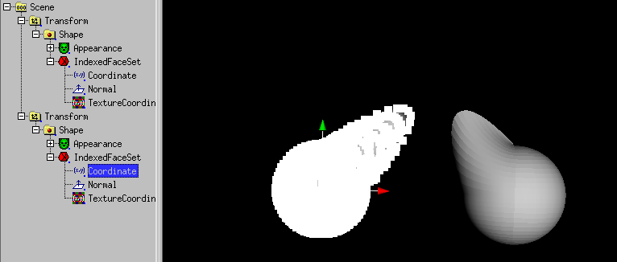
Select with the right mouse button several vertices of the first object.
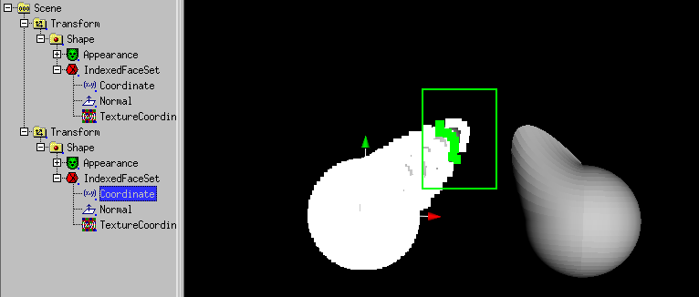
After the release of the mouse button:
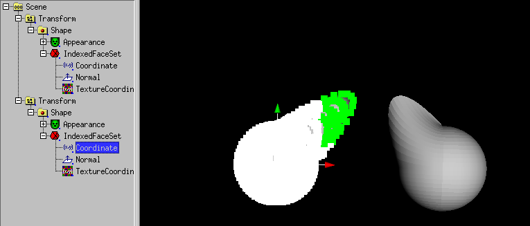
Then use Selection -> Collect Vertices for convex hull.
Select Vertices of the second object.
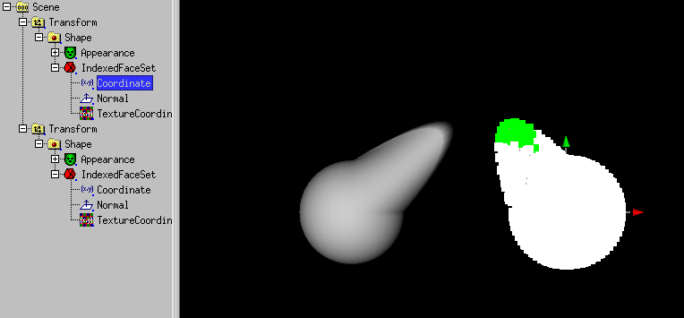
Then use Selection -> Collect Vertices for convex hull.
Then use Actions -> Convex hull.
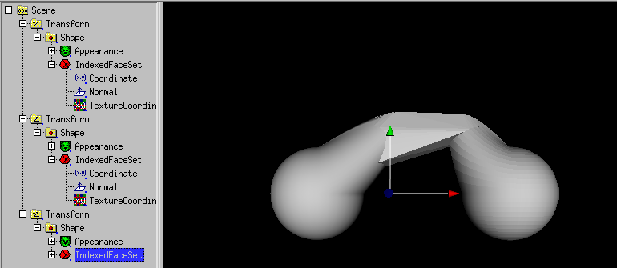
A connection between the objects have been created.
The scnengraph can be simplified e.g. with
boolean modelling (union).
Another type of connection is created with
Actions -> NURBS convex hull.
It could be a good idea, to use "NURBS convex hull" first and then
"convex hull".
If you work with Subdivide Modelling (or
a 3D-Scanner), the number of resulting faces can explode.
As a little help, a mesh reducer exists.
As a example, the result of a convex hull operation is used:

Select a IndexedFaceSet, so (IndexedFace)Set -> Mesh reduce
becomes available.

If you click it, a dialog with the question about the percent of the
remaining faces occures.
When e.g. 5 percent is used, a 1/20 of the faces remain.

Take care that the Mesh reducer (like the convex hull tool) do not
deliver symetic resuls.
The only way out is symetric modelling.
With (IndexedFace)Set -> make symetric you can mirror the
one (plus) or orther (plus deselected) side of a IndexedFaceSet.
"Skin and bones" means that you have a surface as skin and joints/bones to
manipulate the surface. Skin and bones technics in X3D are connected
to the HAnimHumanoid node, cause the main application is human animation.
But human animation require a lot of joints, so a flower with two
joints is shown.
If you want to try a human (made with "makehuman") instead, use can use
human.x3d in the docs/usage_docs directory instead.
A walk animation (extended with the "Nancy" animation of Cindy Ballreich)
is available as
human.x3dv in the docs/usage_docs Directory.
This animation was modified at the hips, to compensate the wide legged
pose of the "makehuman" output.
You can also choose the 4 legged animal
tutorial, to learn about skin and bones.
Back to the flower:
First we start with a IndexedFaceSet of a flower (created with a SuperRevolver,
converted to a modified Nurbs(Patch)Surface converted to IndexedFaceSet).
Of course, the procedure is also working with another IndexedFaceSet.

Next we create a HAnimHumanoid node with Create -> X3D misc components
-> H-Anim -> HAnimHumanoid and move the Shape node to
HAnimHumanoid.skin.

Do not worry, the flower disappears from the preview 3D-window.
Now select the Coordinate node and use Selection -> Vertices
(or better: Selection -> HAnimJoint weight).

If Actions ->X symetric Modelling is set, click to the
 icon.
icon.
Use the right mouse button to pull a box around the half of the flower.

Use Create -> X3D misc components -> H-Anim -> HAnimJoint.
A dialog opens:

Click to OK.

A DEF dialog opens. Click to OK.

Select the HAnimHumanoid.skeleton field. Use Edit -> USE.

Select "Scene".

Select the Coordinate node and use the right mouse button to pull a
box around the rest of the flower.

A dialog opens:
Click to OK.
A DEF dialog opens. Click to OK.

Select the HAnim_Humanoid.skeleton.HAnimJoint1.children field.
Use Edit -> USE.

The flower and its joint is complete. Use Mode -> center
to move the center of the joint.

Use Mode -> rotate then use the rotation handle to rotate the
upper part of the flower.

To set HAnimJoint.skinCoordWeight less than 1, select the matching
HAnimJoint (select "Scene" to forget this selection), then select the
Coordinate node.

Use the right mouse button to pull a box around the vertices you want to
set the weights.

Set the weight value in the dialog, the "node" and "parent" dialog element
has been set from the former HAnimJoint selection. Click OK.

The flower is ready, but HAnimHumanoid.skinCoord needs to be set.

You have to select HAnimHumanoid.skin.Shape.IndexedFaceSet.Coordinate and
use edit -> DEF.

Click OK.
Select HAnimHumanoid.skinCoord and use edit -> USE.

White_dune allows the boolean modelling of IndexedFaceSets.
To do this, a Group of 2 meshes (graphic object except Text (and other faces))
is subtracted, intersected or unioned.
A new IndexedFaceSet is created. Only closed objects are allowed, which
may not intersects self.
It starts with a Box

Next "Scene" has to be selected.

Then a Sphere is added. It is not visible, but the handles are still
visible.

The sphere is scaled up by dragging the handles.

Next the first Transform has to be selected.

Next Actions -> Rest of scenegraph branch ->
move to -> Group is used. Of course there are simpler ways to
create a Group with 2 meshes.
Next the Group has to be selected.

Next (IndexedFace)Set -> Boolean operations -> Intersection
is used.

A IndexedFaceSet with the intersection has be created.
Next "Scene" has to be selected.

Next another sphere is added...

... and scaled up

Next the first Transform has to be selected.

Next Actions -> Rest of scenegraph branch ->
move to -> Group is used.
Next the Group has to be selected.

Next (IndexedFace)Set -> Boolean operations -> Intersection
is used. A IndexedFaceSet is created.

The Vertex Modifier can be used to modify vertices.
NurbsSurface or Coordinate has to be selected.
A example starting with the SuperEllipsoid node:
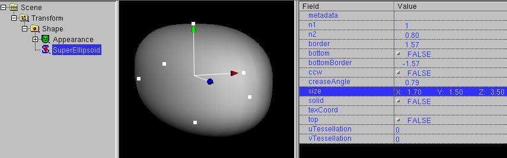
This node must be converted into a NurbsSurface with
Convert -> Convert to Nurbs(Patch)Surface
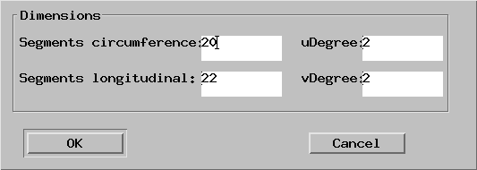
A higher number of vertices has to be inserted, with less vertices the
vertex modifier ist useless.
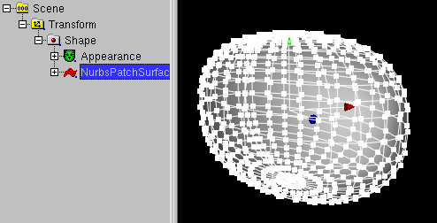
After that, the Nurbs(Patch)Surface node is selected.
The Vertex Modifier icon (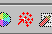) must be clicked.
X symetric Modelling has to be enabled.
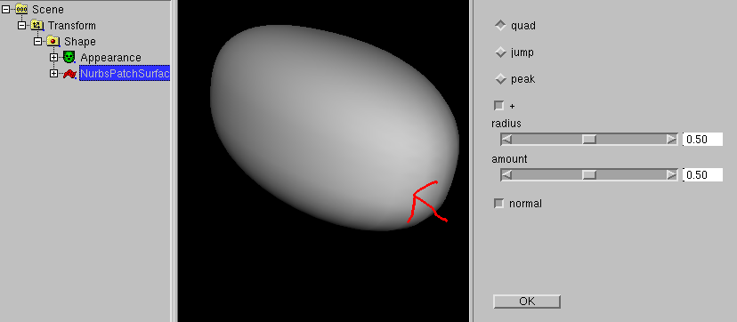
After this "jump" has to be clicked, "radius" and "amount" should be 5
and the object has to be clicked at the position of the arrow.
The exact orientation of the object is important here.
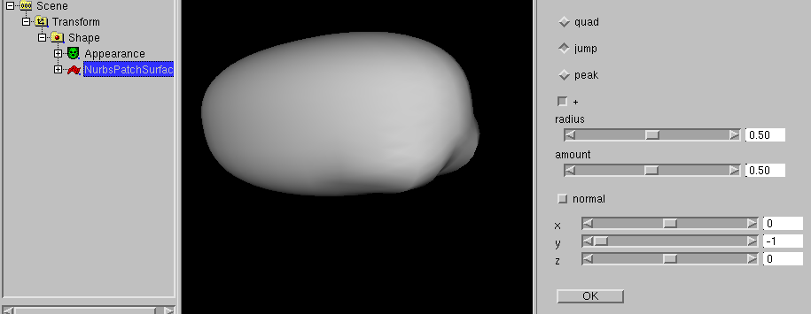
A few vertices near the border of the object has been modified.
Now click to normal.
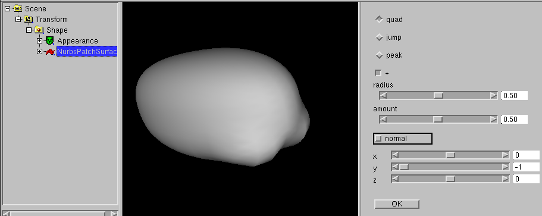
3 sliders are displayed, which show the direction of the modification.
The default is (0, -1, 0), this is "down".
After that, nearly the same Position has to be clicked.
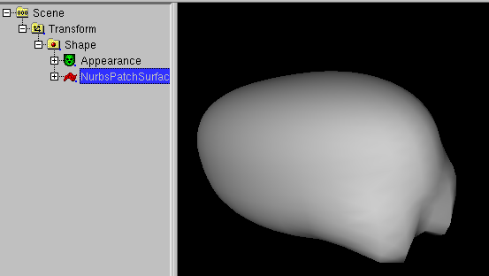
After that, you click "OK". The vertices are selected again and
the object can be handled as usual.
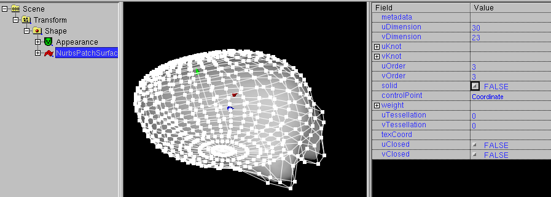
White_dune allows to multiply objects. In difference to similar functions
in some 3D-Modellers (like the "Art of Illusion" program) it do not create
N copies of the same object. It creates N VRML Transform nodes (for
translation, rotation etc. in respect to the Array dialog below.)
with a VRML USE construct. A USE construct is a compact way to repeat
things in VRML. It is a sort of "pointer without difference" similar
to a hardlink to a UNIX file (if you know only M$Windows: a more smart way
of a shortcut to a file). A USEd node also changes, when it orginal
changes.
To use the Array tool, select the object you want to multiply

and use Actions -> Array. A dialog will occure

where you can input the number of objects and the parameters for the
transform node.

When you change the orginal, all USEd nodes change too.

Repair commands in the "Actions" menue
The following commands are usefull, when you work with VRML/X3D files
made by other tools. The commands are made to correct some minor errors
and problems.
-
In some cases tools export files with invalid children nodes.
You have to differ between two cases when useing the remove command
for invalid children nodes.
-
The programmer of the tools confused the meaning of DEF/USE with
a macro usage like the usage of "#define" in the programming language
C. Cause there is a additional matching USE command, the invalid
children node can be removed inside white_dune without loosing
information in this case.
-
The programmer of the tools made another mistake. In this case
the remove of the invalid children node means a true data loss.
-
A IndexedFaceSet is a shape made of polygons. In general, this means
there may be faces with 3, 4, 5, 6, 7 etc. edges. Unfortunatly, the
task to render general polygons in realtime 3D is not easy.
There may be three major problems if a face have more then 3 edges:
-
The polygon is self-intersecting.
There is a matching rule about a IndexedFaceSet in the VRML97 standard:
"Each face of the IndexedFaceSet shall have: ... vertices that define a
non-self-intersecting polygon."
A self-intersecting polygons is usually seen as defect. Often it
has been created by a true programming error with accidently
swaped edges of the polygon.
In any case, this polygons are not displayed as they are defined.


Left a self-intersecting polygon, right the triangulated polygon
-
The polygon is not flat.
There is a matching rule about a IndexedFaceSet in the VRML97 standard:
"Each face of the IndexedFaceSet shall have: ... vertices that define a
planar polygon."
But unfortunatly, it is not very uncommon that this rule ignored,
despite there are at least two different ways to render
nonplanar polyons.
For example a polygon with edges 1, 2, 3, 4 can be rendered either
as a triangle with edges 1, 2, 3 and a triangle with edges 3, 4, 1
or rendered as a triangle with edges 4, 1, 2 and a triangle with edges
2, 3, 4. In the nonplanar case, this triangles look different.


-
The polygon not convex.
Unlike the two other cases, it is legal to have a IndexedFaceSet with
non-convex polygons, but its "convex" field must be set to "FALSE".
In general, it is simpler/faster to render convex polygons than to render
non-convex polygons. If the algorithm to render convex polygons is
used to render non-convex polygons, the result may look very ugly.


Left a non-convex polygon, rendered with "convex TRUE",
right the triangulated polygon.
All of this problems can be avoided by converting the polygons with more
than 3 edges into triangles. This is called "triangulation".
In general, the triangulation of a polygon may require the creation
of new vertices, so using triangulation for a IndexedFaceSet with
morphing animation is usually not a good idea.
-
Some tools, which write VRML/X3D Files produce paths in the "url" field
(e.g. when using images/bitmaps for the ImageTexture node), which are
only valid on the creating computer itself (e.g. "C:\temp\beispiel.png").
But VRML/X3D files will be often transfered to a webserver.
Even when the files has been transfered too to the webserver, it is
not sure, that the paths in the VRML/X3D File is true.
The command "Set path of all URLs to" allows it, to change all paths
at once. Very usefull is the defaultpath ".". This means that all
image-, sound- and moviefiles are in the same directory as the the
VRML/X3D file itself.
Other commands in the "Actions" menue
-
The usage of the "Edit Object"/"Edit URL" action has been already
described in the chapter about script editing.
Beside the usage of a Texteditor to change the "url" field of a Script
node ("Edit URL") it also describe the usage of a special tool ("Edit object")
to change the Script node by itself.
The same principles apply to some of the other nodes with "url" fields:
the ImageTexture, the AudioClip and the MovieTexture node.
The usage of Action -> object edit starts depending from
the selected node of type
-
ImageTexture
a program to change imagefiles/bitmapfiles (.jpg/.png)
(e.g. gimp or xpaint)
-
AudioClip
a program to change soundfiles (.wav)
(e.g. audacity or wavesurfer)
-
MovieTexture
a program to change moviefiles (.mpeg)
(e.g. avidemux)
The Linux/UNIX version of white_dune searches in the configuration step
of the compilation for already known programs, that can be used for
Edit object.
When there is no matching program available, a Dialog will ask at
the first usage for a program.
It is possible to exchange the programs via a dialog at
Options -> Text/object Editor settings ....
A important hint for MacOSX users: the programm used to edit text or
objects may not return a once to the commandline. This is often the case
for usual ".app" MacOSX programs. You can either try to use the
binary program of a something.app MacOSX program in the directory
something.app/Content/MacOS or you can prefer to use ported UNIX/X11
programs like gimp.
-
Sometimes it is usefull, to reset all changed values of a node
back to the default values. But the nodes in the VRML/X3D scenegraph tree
often contain other nodes, so a reset to the default values would
cause the deletion of hole subtrees.
-
Xray rendering is a experimental functions, which let you look through
all solid surfaces of a scene. In general this can be very confusing,
but it is sometimes rather usefull.
To create a PROTO, a scenegraph branch has to be created first. The nodes of
the scenegraph branch are the major part of the PROTO.
In this example, the nodes of a Shape/Box, Shape/Sphere and Viewpoint are
in the scenegraph branch.

To create a PROTO with this nodes you must click Actions->Rest of
scenegraph branch->Move to->new PROTO.

This is followed by a dialog, that asks for the name of be PROTO, here
you select "DOME".

As next follows a dialog, which let you select the arguments of the PROTO.
Later you select this Dialog by selecting the PROTO and use
Edit -> Object edit.
As field argument you select SFColor color and press "Add".

Then you press "ok" to end the Dialog.

Next opens the RouteView/IS-Fenster, the PROTO "DOME" is selected.

It is now possible to add/change nodes of the PROTO with the rest of the
scenegraph. In this case, the Viewpoint node is moved out of the PROTO into
the scene.
Next Create -> PROTO usage -> DOME
is used to display the DOME in the scenegraph.

Next you select a Material node in the PROTO and
use Routes/IS -> Show node on top .

Next you move Material node and PROTO in the Route/IS view to connect
color and diffuseColor zu.

Next you select the other Material node in the PROTO and
use Routes/IS -> Show node on top .

Next you move the other Material node and PROTO in the Route/IS view to connect
color and diffuseColor zu.

After that you can change "color" in the DOME node and insert another
Transform and DOME pair.

In VRML/X3D it is amaizingly different to build sequences of animations,
usually called "movie". According to the realtime 3D nature of VRML/X3D
animations can be started interactivly and independendly from each, so
it there is difficult to define a overall timeline, just like the cutting
of a movie.
One approach to ease this problem in white_dune is the usage of the
scripted PROTO node VrmlCut. It has a Field "scenes", where single
animation VRML/X3D data can be put into other scripted PROTO nodes named
VrmlScene. The content of such a VrmlScene node can be seen similar to
a single scene in a movie. The VrmlCut node switches from one VrmlScene to the
next VrmlScene and try to jump to the first camera viewpoint and try to start
all the animations in the current VrmlScene node.
Just like the SuperShape, SuperEllipsoid, etc. node the VrmlCut node is not a
buildin VRML node. It is a PROTO, a sequence of VRML nodes, that is composed
by a Switch node and a Script node and TimeSensor node.
Like a Script node it has a changable set of fields/events. Cause multiple
VrmlCut nodes would have multiple different sets of fields/events, you can
have only one Proto definition of VrmlCut and therefore you can have only
one VrmlCut node per VRML-file.
The VrmlCut switches between a sequence of VrmlScene nodes (basically a
Group-like node with some scripting for routing) driven by the internal
TimeSensor and the Script.
All information between the VrmlCut, VrmlScene, TimeSensors (for animations)
and Viewpoints (cameras) are passed via ROUTE commands. This makes the
concept flexible (for example the ROUTE sources can be reused to drive other
nodes like Sound or Fog) but building much ROUTEs is much work.
To reduce the work, the following method can be used:
-
Build single scenes, each in one VRML file
-
Open a VRML file with common background (or empty)
-
Use Create -> Scripted PROTOs -> VrmlCut to create a VrmlCut node
-
Directly use Create -> Scripted PROTOs -> VrmlScene to create a
VrmlScene node
-
Directly use File -> Import to include a VRML file into the
scene. All timesensors and the first viewpoint gets ROUTEs from the VrmlScene
node. The loop field in the timersensors are switched off. The longest
cycleTime of the timesensors are copied into the matching offset of the
scenelengths field of the VrmlCut
-
Directly use Create -> Scripted PROTOs -> VrmlScene to create
the next VrmlScene node.
-
Directly use File -> Import to include the next VRML file.
-
Continue with this steps
At the end, you can use the "play" icon or File->previewto start the
sequence of animations.
With the sceneNumber, numberPreviousScenes and numberNextScenes fields of
VrmlCut can be used play a reduced range of scenes. This is usefull to optimize
the lengths of the scenes in the sceneLengths field of VrmlCut.
X_ITE X3D is a X3D browser
in the webbrowser, which (other than X3DOM) supports the X3D Script node.
Modern webbrowser sandboxing problems make it impossible to use the
X_ITE X3D browser for previewing X3D files.
Instead you have to use File -> Export as... ->
Export as X_ITE html/X3DV... to write a .html and .x3dv file.
Then the .html file and the .x3dv file has to be uploaded to a webserver
to the same directory and the .html file can be loaded in the webbrowser.
White_dune has a command (menuitem File -> Upload) to upload a VRML
file to a internet server.
When you upload files to the internet, you are usually ask about a access
password. White_dune has the ability to store the password in a memory
protected from swapspace by mlock/vlock calls.
The swapspace is a
region on the disk where the content of the computer memory can be
swapped out to make space for other running programs.
A intruder can inspect
the swapspace to search for passwords.
Passing a password from one application (white_dune) to a other application
(the upload command) in a secure way is not a easy task in respect to things
like swapspace.
In the upload settings dialog (see Options -> Upload settings...)

the upload command can have two parameters. Each parameter of the upload
commandline is set with the characters "%s".
-
In case of one "%s", this parameter
is replaced by the path of the VRML file, which is created from the
the current white_dune data.
If no password is used, the upload program can either ask for a
password each upload or use a advanced authentication mechanism like
ssh passphrase.
-
If there is one "%s" and there is a password, this password is sended
via standardin to the upload program. Usually the content of
standartin/standardout is not protected from spacespace, so there
is possibly a security risk when using this option.
-
Using two "%s" send the password via a commandline option. On most
Operationsystems, this is a high security risk, cause commandline
options can be read by any other user on the same system.
The last line in the upload settings dialog gives you the ability
to reload a HTML-webpage after the upload. To use it, you have to
type in the HTML tags that will be copied into a HTML file.
For example, the following dialog will copy the data by
white_dune to a VRML file with a static name and will display this
VRML file together with the string "hello" in the webbrowser on the next
File -> upload command.

The HTML tags line can contain "%s" characters, which would be replaced
by the password. This would result in a HTML file with the password in it.
This is a very high security risk, do not use
this feature without knowing exactly what you are doing !